| Submitted by | Team PRAHARI |
| Team lead | Agraj Singh |
| Members | [Members: …] |
| Category | [Category: …] |
| Document version | 1.0 (first submission) |
| Date | 28 September 2026 |
| Source code | Repository submitted with this document; every “built” claim names the file that implements it |
| Title | PRAHARI — Technical Proposal: High-Level Design (HLD) |
| Version / status | 1.0 — submitted for the Sentinel shortlisting round |
| Answers | Submission requirement “2. Technical Proposal — High-Level Design (HLD)” (eight items), the ten solution-design dimensions of Step 3 and the seven scalability items of Step 6 of the official Problem Statement. Appendix C maps every official requirement to the section that answers it, with build status. |
| Source of truth | Where this document and the submitted code could differ, the code is authoritative. Every capability marked Built is implemented in the repository and exercised by its test suite or by the practice-mode run described in Section 16. |
| Companion artefacts | Solution presentation (PPT/PDF); own-feed and government-feed demonstration videos; plates output report (CSV); live API documentation at /docs of the running platform. |
This is a design for a statewide system, written by a team that has also built a working reference implementation. To keep the two apart, every capability carries one status label and every number one provenance label.
| Built | Implemented in the submitted code and tested; the implementing file is named. |
| Designed | Specified here (interfaces, behaviour, parameters), not yet implemented; target of the pilot. |
| Roadmap | Planned for a later rollout phase; intent only. |
| measured | From running the submitted code; run, machine and date given. |
| derived | Calculated from measurements and/or stated assumptions; formula or source given. |
| assumed | An input assumption, listed so it can be challenged and replaced by a surveyed value. |
Spelling follows Indian English. Times are Indian Standard Time (UTC+05:30) unless stated. “Camera” includes a channel of an NVR/DVR or VMS. All monetary figures come from the team’s sizing model (Section 12): ₹, excluding GST, accurate to about ±30%.
The problem. Twenty-six departments run their own CCTV — analog and IP, many vendors and VMS platforms, cloud or local storage, 7–15+ days’ retention — at sites up to ~1,000 km apart. The State wants one platform that reads plates, correlates them continuously with watchlists from VAHAN, SARTHI, eGujCop, AFIS and NAFIS, raises real-time alerts and traces vehicles, growing to ~80,000 cameras on existing infrastructure. VISWAS (7,000+ cameras in Phase I, 10,500+ in Phase II) and 34 Netram centres already exist; the missing piece is the connective layer.
Declared model — Hybrid. Model 1 (registry and GIS) is the foundation and the system of record for every camera. Model 3 (federation) is the spine: adapters normalise each vendor’s system into one camera contract and one event contract. Model 2 (direct connection) is used per camera or recorder, over RTSP, HLS, ONVIF or a vendor API, without changing the department’s system. PRAHARI delivers Model 4’s analytics — ANPR, watchlist correlation, cross-camera tracking — but runs them at the edge, so it does not need Model 4’s central video backbone, petabyte storage or GPU farm. Full centralisation was evaluated and rejected on bandwidth, storage, compute, cost and data-protection grounds (§3).
GJ01AB1Z34 still matches GJ01AB1234), alert vs review, live push, acknowledgement, route reconstruction with plausibility checks.Cost. For 80,000 cameras the sizing model estimates PRAHARI at ₹49 Cr capex and ₹18 Cr a year opex — ≈ ₹130 Cr over five years, against ≈ ₹510–640 Cr for a centralised design running the same analytics (infrastructure only; ≈ ₹870 Cr with commercial licences; ±30%, ex-GST) derived §12.
Not yet built, and stated as such throughout: operator login and role-based access (today the operator names themself), the node’s outbound mTLS link, disk store-and-forward and bandwidth ladder, SHA-256 evidence manifests, government-database adapters, face recognition, appearance-based re-identification and non-ANPR analytics. Plate accuracy is so far measured on synthetic plates; two-wheeler plates are read poorly. §16.5 lists every limitation; §15 schedules each.
| Fact (source: Problem Statement unless noted) | Detail | Design consequence |
|---|---|---|
| 26 departments, independent systems | Each owns its cameras, VMS, AMC contract, budget line and liability. Examples named: Home (public spaces, traffic, law and order), Food & Civil Supplies (godowns, PDS shops), RTO (offices, test tracks, checkpoints). The sandbox adds Health, Panchayat, GSRTC and Municipal cameras. | Integration must not require any department to replace, reconfigure or hand over its system. Joining should cost a department nothing and give it something (health monitoring, its own map and gap report). |
| Heterogeneous infrastructure | Analog and IP cameras; multiple vendors and VMS platforms; H.264 and H.265; varied resolutions and frame rates; cloud and local storage. | One normalised camera contract (CameraInfo) and one event contract (PlateEvent) behind vendor adapters. Never assume a fixed resolution, codec or frame rate. |
| Retention 7–15+ days, varies | Video is already recorded, locally or in a department cloud. | Do not duplicate video storage centrally. Pull a clip from the owner’s recorder on demand, within its retention window. |
| Geographic dispersion ~1,000 km | Border districts, Valsad, Dahod, Somnath, Jamnagar, Dwarka. Uplinks vary from fibre to thin or intermittent links. | Process at the edge; send events, not streams; keep working through outages and back-fill afterwards. |
| Scale ~80,000 cameras | Target size of the unified platform. | Horizontal scaling units (one node per site; partitioned central services). Onboarding must be automated — 80,000 cameras cannot be surveyed by hand. |
| Existing State assets (public sources, Appendix D) | VISWAS Phase I: 7,000+ cameras at ~1,200 junctions, 34 district HQs, pilgrimage centres; Phase II: 10,500+ cameras in Surat, Vadodara, 52 municipalities and inter-state points. 34 Netram district command and control centres. | Netram centres become regional tiers; VISWAS cameras are onboarded as they are, through their existing backhaul. PRAHARI is the connective layer, not a replacement. |
| Government databases | VAHAN, SARTHI, eGujCop (CCTNS), AFIS, NAFIS: stolen vehicles, wanted persons, missing persons, unidentified bodies, fingerprints. | Watchlist adapters with a stable internal schema. Treat production access as a provisioning step owned by each database’s custodian. |
| Private cameras “wherever feasible and permitted” | Societies, malls, commercial establishments. | Consent tiers per camera with owner revocation; default is “registered”, not live ingestion (§10.9). |
| Legal envelope (Appendix D) | Digital Personal Data Protection Act 2023; K.S. Puttaswamy v. Union of India (2017) proportionality test for State intrusion into privacy. | Purpose binding, minimisation (no central video), access audit, retention limits, face recognition off by default. |
The organisers’ sandbox notes describe behaviours any production system meets at scale, and they are treated here as engineering constraints: the catalogue GET /api/ingest is the contract while identifiers and URL patterns may change; RTSP must run over TCP; a buffered GOP is replayed faster than real time on connect, so timing must come from stream timestamps (PTS), not arrival; declared frame rates are unreliable and frame intervals uneven; feeds restart, decoder warnings at join are normal, each feed loops with a hard scene cut, and codecs and resolutions are mixed; clients must consume only and open only what they process. Section 5.6 shows how each is handled and tested.
| Quality | Requirement PRAHARI sets for itself |
|---|---|
| Non-intrusive | No change to any department’s cameras, recorders, VMS or firewall inbound rules. PRAHARI is an additional read-only stream client. |
| Vendor-neutral, open | Open protocols (RTSP, HLS, ONVIF), open model formats (ONNX), documented REST/OpenAPI, adapters as the only vendor-specific code — matching the “Architecture Principles” of Step 3. |
| Degrade, never fail | One bad camera, one bad catalogue fetch or one bad frame never stops the rest. Loss of the State link does not stop detection at the edge. |
| Bounded resources | No unbounded queues; one decoder and one latest frame per camera in memory; raw video never stored by PRAHARI; evidence storage capped. |
| Accountable | Every query on a person’s or vehicle’s movement is purpose-bound and audited; audit log is tamper-evident. |
| Measured, not assumed | Camera properties (frame rate, codec, resolution, plate legibility) are measured by the system and written to the registry. |
These assumptions underpin the design. Each has an owner who can confirm or correct it during the pilot (§15).
| ID | Assumption | If wrong |
|---|---|---|
| A1 | Every camera is reachable as a stream from a host on the owner’s network: directly (IP camera) or through its DVR/NVR/encoder/VMS (analog cameras). | Analog cameras without any encoder need a low-cost encoder; listed as a prerequisite in §14. |
| A2 | Each site, or its district Netram centre, can host a node (VM, spare PC or small edge box) with outbound HTTPS to the State data centre. | Stream is relayed to the nearest Netram-hosted node over existing links (§11). |
| A3 | Recorders expose read-only credentials and, ideally, a sub-stream; PRAHARI never needs admin rights. | Department creates a read-only user; §14 lists it as a prerequisite. |
| A4 | Site clocks can be synchronised (NTP) to within a few seconds, or skew can be measured. | Trace flags implausible hops rather than hiding them (§8.6); clock-skew measurement is on the roadmap. |
| A5 | Government databases can supply watchlist extracts or lookups through an authorised interface once the custodian approves. | Scheduled CSV/API import (already built) remains the integration path. |
| A6 | Roughly a quarter to a third of all cameras face traffic in a way that permits plate reading; the rest are corridors, gates, counters and yards. | Capability profiling measures this per camera; sizing (§12) is recalculated from the measured share. |
| A7 | Per-stream bitrates for the Model 4 comparison: 2 Mbps (1080p H.264, conservative); 4 Mbps realistic. | Model 4 figures in §3 scale linearly with the bitrate. |
Model 1 is mandatory and forms the foundation in every option. The real choice is how video and analytics are combined with it. The table compares the options against the constraints of Section 2.
| Criterion | Model 2 — direct connect | Model 3 — federation | Model 4 — central VMS & AI | PRAHARI hybrid (1 + 3 + 2, edge analytics) |
|---|---|---|---|---|
| Continuous backbone load | High if every stream is viewed or analysed centrally | Low (metadata) unless video is relayed | ~160 Gbps sustained for 80,000 streams at 2 Mbps | 0.21 Gbps average, 0.45 Gbps peak (§3.3, §12) |
| Central video storage | None or partial | None | ~51.8 PB for 30 days, before replication and DR | None; evidence crops and case clips only |
| Inference | Central GPUs for analytics | Depends on each VMS’s analytics | ~2,000 GPUs as usually specified; ~224 L4 GPUs for the same 1 fps analytics; plus ~445 recording servers | 166 L4 GPUs at the 34 Netram centres + ~3,450 small edge nodes; central tier on CPUs |
| Department control | Kept, but many inbound connections | Kept | Surrendered to the central platform | Kept; node is outbound-only and removable by the department |
| Works through WAN outage | No | Partly (local VMS) | No | Yes: detection continues, events back-fill (§6.5) |
| Heterogeneity | Must speak every protocol centrally | Adapters per VMS | Re-ingest everything into one VMS | Adapters per camera/recorder/VMS at the edge |
| Data protection (DPDP, Puttaswamy) | Central access to all live video | Moderate | Central retention of all video of all public spaces | Minimised: no central video; purpose-bound, audited queries |
| Time to statewide | Medium | Medium (per-vendor work) | Longest (network and data-centre build) | Shortest: one software node per site, onboarding automated |
Model 4 is the most complete on paper and was evaluated seriously. For a statewide primary architecture it fails on arithmetic before it reaches policy:
| Quantity | Calculation | Result | Label |
|---|---|---|---|
| Backbone, conservative | 80,000 cameras × 2 Mbps (1080p H.264) | 160 Gbps | derived A7 |
| Backbone, realistic | 80,000 × 4 Mbps | 320 Gbps | derived A7 |
| Backbone, sub-streams only | 80,000 × 512 kbps | 40 Gbps | derived |
| Storage per camera-day | 2 Mbps × 86,400 s ÷ 8 | 21.6 GB | derived |
| Central storage, 30 days | 21.6 GB × 80,000 × 30 | 51.8 PB | derived |
| Central GPUs, as usually specified | 80,000 streams ÷ 40 streams per GPU at full video rate | ~2,000 | assumed 40/GPU |
| Central GPUs, same analytics as PRAHARI | 1 fps ANPR + 0.2 fps light analytics, decode-bound (§12) | ~224 L4 | derived |
The case does not rest on GPUs. A central design running only PRAHARI’s sampled analytics needs about as many GPUs as PRAHARI itself places at the Netram centres. It rests on the WAN — 160 Gbps, always on, across ~1,000 km and 33 districts, a recurring cost of about ₹60 Cr a year in the sizing model — and on ~52 PB of video storage, before a DR copy. Section 12 prices both architectures: over five years, ≈ ₹130 Cr for PRAHARI against ≈ ₹510 Cr for the most favourable central design and ≈ ₹640 Cr as usually specified (infrastructure only), or ≈ ₹870 Cr with commercial licences. Three further reasons stand independently of cost:
Model 4 is not discarded entirely: its analytics — ANPR, statewide vehicle tracking, watchlist integration — are all delivered, at the edge. Its central-recording function remains available per case, as an on-demand clip pull from the owner’s recorder (§6.6).
A plate read is a structured record of a few hundred bytes (547 B measured, including five ranked candidates); an evidence crop of plate and vehicle is ~5–30 KB. A first-principles estimate — 30% of cameras facing traffic, 0.2 vehicles per second each around the clock, 200-byte events, 10 KB crops assumed — gives:
| Flow | Volume per day | Average rate | Label |
|---|---|---|---|
| Events only (24,000 cameras × 0.2 veh/s × 200 B) | ~83 GB | ~7.7 Mbps | derived |
| Events + one evidence crop each | ~4.2 TB | ~392 Mbps | derived |
| Raw video, all 80,000 cameras at 2 Mbps | ~1,730 TB | 160,000 Mbps | derived |
These first-principles rows are shown only for transparency and are superseded: the bottom-up sizing model (§12) corrects their inputs in both directions: fewer plate events (realistic traffic per camera type and a 29% ANPR-capable share), larger crops (15 KB), plus telemetry, clip pulls and protocol overhead, and it provisions for the peak hour rather than the average. Its base case is 0.21 Gbps average and 0.45 Gbps at peak — about 350× less at peak (750× on averages) derived. Links must be bought for the peak, so the headline used in this document is 160 Gbps → under 0.5 Gbps at peak (~350×). Across every sensitivity case in §12 the ratio stays between 110× and 5,500×.
| Model | What PRAHARI takes from it | Where |
|---|---|---|
| Model 1 — Registry & GIS | The system of record for every camera: location, department, ownership, stream endpoints, health, and measured capability. Three onboarding paths, map layers, gap analysis, audit trail. Mandatory, and the foundation of everything else. | §5.4, §8.5, §16; prahari/registry/ |
| Model 3 — Federation | Adapter architecture that normalises vendors into one camera contract; event contract and event bus; cross-system correlation (watchlist, trace) over events from all departments; unified alert dashboard. | §4.3, §5.2, §7; prahari/common/contracts.py |
| Model 2 — Direct connect | Per-camera or per-recorder stream access over RTSP/HLS/ONVIF/vendor API, without middleware in the video path; ANPR metadata, camera-wise indexing, searchable movement records, video wall. Departmental systems unaffected. | §5, §6; prahari/node/ |
| Model 4 — Central AI | The analytics (ANPR, statewide tracking, database integration), tiered storage for events and evidence, DR, encryption, RBAC. Not the central ingestion and recording of all video. | §7, §8, §10, §13 |
The pattern is established elsewhere and is adapted, not invented. The UK National ANPR Service federates plate reads — not video — from all police forces, at a reported ~90 million reads per day, through a gateway → ingest → screen → exploit pipeline whose shape PRAHARI’s central tier follows; it relies on standardised UK plates, which is why PRAHARI replaces exact matching with grammar-constrained, confusion-aware matching for Indian plates (§7). Edge appliances that dial out from existing recorders to a real-time crime centre (e.g. Fūsus in the United States) show that unifying public and private cameras does not require replacing them; PRAHARI keeps the pattern but makes the node software-only and tolerant of poor connectivity. South Korea’s district-level integrated CCTV control centres paired consolidation with a statutory privacy framework; PRAHARI pairs integration with DPDP-aligned controls by design. Sources are in Appendix D.
CameraInfo, FrameSample, PlateEvent (Appendix B) — separate vendors from analytics and analytics from central services. Builtrun.py); the arrows are the same interfaces that cross the WAN in production (Table 4.2).| From → to | Interface | Payload and semantics | Status |
|---|---|---|---|
| Catalogue / VMS → node | HTTP GET /api/ingest; adapters | Camera list → CameraInfo; tolerant parsing; raw entry kept; re-polled every 60 s | Built |
| Camera / recorder → node | RTSP over TCP; HLS | Compressed video, read-only, LAN only; decoded in memory, never stored | Built |
| Capture → ANPR | In-process 1-slot mailbox | FrameSample (PTS-derived capture time, epoch); newest frame wins, nothing queues | Built |
| Node → central (events) | POST /api/events/plate, /batch | PlateEvent JSON; idempotent on event_id, so at-least-once delivery is safe | Built (in-process call today) |
| Node → central (health) | POST /api/cameras/{id}/health | State, measured fps, codec, resolution, reconnects, decoder warnings, ANPR profile; every 10 s | Built |
| Ingest → screen → alerts | In-process; production via event bus | Screen each event on corrected plate and raw text; alert/review; 120 s de-duplication | Built / bus Designed |
| Alerts → console | Server-Sent Events /api/alerts/stream | One JSON alert per message; replay of open alerts on connect; 15 s keep-alive | Built |
| Console → trace/search | GET /api/trace/{plate}, /api/events | Requires purpose + case_id; returns sightings, hops, GeoJSON, near-misses; audited | Built |
| Gov. DB → watchlist | Adapter (pull delta / lookup) | Watchlist entries with category and case details; enrichment on hit | CSV/API Built; adapters Designed |
| Central → node (clip) | Request over the node’s outbound channel | “30 s around time T on camera C for case K”; node fetches from the recorder, hashes, uploads | Designed |
plate_grammar.py), alert de-duplication 120 s (events.py), per-pass de-duplication 6 s (runtime.py), trace visit collapse 60 s and plausibility 150 km/h (trace.py).The submitted reference implementation runs every tier in one Python process so that it can be installed and demonstrated on a single laptop with no internet access (python run.py). The production target keeps the same components and contracts but deploys them as separate, horizontally scalable services. The suggested technology stacks in the Problem Statement are used where they fit.
| Layer | Reference implementation (built) | Production target (designed) |
|---|---|---|
| Packaging | One process: run.py starts node, API and console; practice mode includes its own RTSP grid | Node: one OCI container or appliance image per site. Central: containers on Kubernetes across two halls, plus DR |
| Stream I/O | PyAV (FFmpeg) — RTSP over TCP, RTSPS, HLS; per-camera thread | Same, plus ONVIF discovery and vendor adapters; hardware decode (NVDEC, Quick Sync) where present |
| Inference | ONNX Runtime; CoreML (Apple), CUDA (NVIDIA, with onnxruntime-gpu) or CPU chosen automatically | Same ONNX models; TensorRT or OpenVINO builds for edge accelerators; batched inference on regional GPU nodes |
| Event transport | In-process call to the ingest function; HTTP ingest and batch endpoints exposed | Node → gateway over mTLS (HTTP/2 batches); central Kafka (or NATS JetStream) topics partitioned by camera |
| Storage | SQLite in WAL mode (registry/db.py); evidence JPEGs on local disk with a size cap | PostgreSQL + PostGIS (registry, GIS), TimescaleDB hypertables (events), S3-compatible object store (MinIO/Ceph) for evidence |
| Live alerts | In-process pub/sub → Server-Sent Events | Same SSE interface, fanned out across API replicas through the bus |
| Console | Static HTML/JS (no build step), Leaflet maps, snapshot video wall refreshed every ~2 s | Same console; WebRTC/HLS relay for on-demand live view of selected cameras |
| Identity | Operator identity supplied in an X-Actor header; server binds to 127.0.0.1 by default | State SSO (OIDC) with RBAC and department scoping; mTLS certificates per node |
Heterogeneity is solved once, at the edge, by adapters that turn whatever a department has into two normalised things: a CameraInfo record (who and where the camera is, and how to open it) and a stream of FrameSamples (decoded pictures with trustworthy timestamps). Nothing downstream of the adapters knows which vendor, codec or recorder a camera belongs to.
| Source | How PRAHARI connects | Notes | Status |
|---|---|---|---|
| IP camera | RTSP (forced over TCP) or RTSPS, main or sub-stream | Read-only credentials; the camera keeps recording to its own NVR. Credentials are stripped from every log line and status report. | Built |
| Analog camera | Through the DVR, hybrid NVR or video encoder that already digitises it, which exposes RTSP per channel | No change to the analog plant. Where no encoder exists, a low-cost encoder is a site prerequisite (§14). | Built (via RTSP) |
| NVR / DVR channel | RTSP per channel (most NVRs); vendor HTTP API for channel lists | Channel list becomes the catalogue; one worker per channel. | RTSP Built; API Designed |
| HTTP streaming gateways | HLS (.m3u8) as a fallback where RTSP ports are blocked | Same decoder path; timing still from PTS. | Built |
| WebRTC (WHEP) endpoints | URL recognised and stored in the registry | Used for low-latency live view in the console; not for analytics. | Parsed Built; playback Designed |
| ONVIF devices | ONVIF Profile S/T: discovery, GetProfiles, GetStreamUri, device time | Fills the catalogue automatically on a department LAN; also reads device clock for skew. | Designed |
| Departmental VMS | VMS adapter using the vendor’s documented SDK or REST API: camera list, live stream URI, playback/export for clip pull, events | One adapter per VMS product, reused across every department that runs it. Adapter certification test suite with record/replay fixtures. | Designed |
| Cloud-recorded estates | Vendor cloud API or RTSP relay offered by the provider | Treated as a VMS adapter; bandwidth is the provider’s egress, so sub-streams preferred. | Designed |
| Catalogue services | HTTP JSON catalogue such as the Sentinel GET /api/ingest | Tolerant parser; the proven onboarding path for the evaluation grid. | Built |
Every adapter implements the same small contract, so a new vendor is a new adapter — not a change to analytics, registry or console.
| Adapter method | Returns |
|---|---|
list_cameras() | list of CameraInfo (id, name, department, lat/lon, codec, resolution, declared fps, live flag, RTSP/HLS/WHEP URLs, raw record) |
open(camera) | stream URL or handle the capture worker can decode |
health() | adapter-level status (reachable, authorised, last error) |
export(camera, t0, t1) | clip from the recorder for a case Designed |
Built today. The catalogue adapter (prahari/node/catalogue.py) implements list_cameras() for any JSON catalogue, and the capture worker (prahari/node/capture.py) opens any RTSP, RTSPS or HLS URL through FFmpeg (PyAV). Because most NVRs, encoders and VMS products can publish RTSP, these two cover the majority of sources without vendor code.
Designed. ONVIF and per-VMS adapters implement the same methods. Each ships with a conformance test that replays recorded responses from the real product, so an adapter can be certified without access to the department’s live system.
For the evaluation grid, the Sentinel catalogue GET /api/ingest is the only source of truth; camera identifiers, the set of cameras and URL patterns can change. The node therefore hardcodes nothing and re-reads the catalogue every 60 seconds Built:
cameras, streams, items, data and similar keys, or an object keyed by camera id. Field aliases for id, name, department, coordinates (flat, nested under location/geo, or GeoJSON [lon, lat]), resolution (1280x720, 720p, [w, h]), frame rate (25 or "25/1") and live status. As a last resort, any string that looks like an rtsp://, .m3u8 or WHEP URL is used. The raw entry is always kept verbatim.absent, never silently deleted, so their history and evidence remain.| Path | Endpoint | Use | Status |
|---|---|---|---|
| 1. Catalogue / API sync | POST /api/cameras/sync (URL or inline payload) | Machine onboarding of a whole estate from a catalogue, VMS export or another system | Built |
| 2. Bulk import | POST /api/cameras/import (CSV or JSON body) | Department spreadsheets; same column aliases as the catalogue parser; rows that cannot be parsed are returned with the reason | Built |
| 3. Manual entry | POST /api/cameras (one camera, JSON); Registry page form | Single cameras, private cameras, corrections | Built |
| Heartbeat (all paths) | POST /api/cameras/{id}/health | Node reports measured status and capability; merged into the camera record | Built |
Every registry change is written to the audit log (actor, action, parameters).
The node is placed on the department’s own network, next to its recorder. It reaches cameras over the LAN and opens a single outbound TLS connection (port 443) to the State gateway, authenticated with a per-node certificate. The State never opens a connection into a department network.
| What a department must do | What it does not have to do |
|---|---|
| Provide a host (VM, spare PC or small edge box) on the camera network; allow outbound HTTPS to one State address; create a read-only stream user. | Open an inbound port, obtain a public IP, change its VMS or recording, renegotiate its AMC, send video off-premises, or give up control. The department can stop its node at any time; the registry then shows its cameras as offline, and its own recording is unaffected. |
In return each department gets, on day one, what most do not have today: live health monitoring of every camera, its own map and coverage-gap report, and a measured record of which cameras work — useful evidence in AMC discussions.
Each behaviour in the Sentinel sandbox notes (§2.2) is handled in prahari/node/capture.py and manager.py and was exercised against a local replica of the grid: 12 cameras in six profiles (H.264 and H.265 at 640×360, 960×540 and 1280×720, 10–25 fps), served over RTSP-over-TCP only, looping, with GOP replay on join (sandbox/grid.py, sandbox/rtsp_server.py).
| Behaviour | Handling | Evidence |
|---|---|---|
| RTSP over UDP corrupts frames across NAT | rtsp_transport=tcp on every RTSP open; the replica server refuses UDP with 461. | All replica runs; unit tests on capture options |
| GOP replayed faster than real time on join | Capture time = offset + PTS, where the offset is the running minimum of (arrival − PTS) in the current epoch; replayed (late) frames can only raise the sample, so the minimum converges to the true offset. | PtsClock unit tests (tests/test_node_capture.py) |
| Declared fps is unreliable | Rate is measured from packet PTS over a 10 s window; declared fps is stored but never used for timing. | Replica: measured 9.6–25.0 fps against declared 10–25 measured |
| Non-uniform frame intervals | A gap is not a disconnect; only read timeout (10 s), end of stream or error ends a session. Sampling is PTS-driven and re-anchors after long gaps rather than bursting. | Unit tests on the rate limiter |
| Feeds restart | Reconnect with exponential backoff: 2 s doubling to 30 s, ±25% jitter; ladder resets after 20 s of healthy streaming. One camera’s failure never affects another. | Feed-restart run: 36 reconnects over 150 s (3 per camera), 12/12 live at end measured |
| Decoder warnings at join (H.265 “Could not find ref with POC”) | libav logs captured per worker thread and counted by kind; never fatal. Bad packets counted and skipped. | Loop run: 341 decoder warnings counted, 0 decode errors, 0 crashes measured |
| Loop point = hard scene cut | PTS moving backwards, or jumping ahead of wall time by > 5 s, starts a new epoch; downstream de-duplication closes its open clusters, so nothing is merged across the cut. Every reconnect is also a new epoch. | Loop run with PTS reset: 24 discontinuities (2 per camera) detected measured |
| Mixed H.264/H.265, resolutions, rates | One decoder per stream; output rescaled per frame to a maximum width with aspect preserved; no fixed-shape batch anywhere. | All six replica profiles live together |
| Load pacing; no downloads; consume only | Only processed streams are opened (allow-list, MAX_CAMERAS); frames decoded live from the stream, never downloaded; nothing is ever published to the gateway. | By construction |
Replica runs on 24 September 2026, Apple M1 (8 cores, 8 GB): 200 s keyframes-only run (12/12 live, 6.5% of one core, 116 MB resident); 150 s full-decode run at 5 fps with repeated server restarts; 100 s full-decode run with PTS reset at loop points. Summaries in data/stability-*.json, produced by python -m prahari.node.stability.
Everything that needs the full video — decoding, sampling, plate detection and reading, de-duplication and capability profiling — runs at the edge (or on a Netram regional node for VISWAS and for sites without local compute), because moving the video would cost ~160 Gbps (§3). Watchlist screening, alert decisions, trace, search, registry, reports and audit run centrally, where events from all departments meet and sensitive watchlists stay in one place; their cost is CPU-only and small per event. Live view and clip retrieval flow edge → regional relay → console, on request and per case only.
node/capture.py, node/manager.py, runtime.py, anpr/*). Dashed blue: designed. In the reference implementation the de-duplicated events go straight to central ingest in-process.TARGET_FPS (default 2) are converted and offered for analysis, selected by PTS. In keyframes mode only keyframes are decoded — about 0.5–1 frame per second at a small fraction of the CPU — for large, low-priority estates. Frames are rescaled to MAX_WIDTH (default 1280 px, because plates need pixels). Built| Measurement (Apple M1, 8 GB) | Result | Label and source |
|---|---|---|
| Ingest only, 12 mixed streams, keyframes mode, 200 s | 6.5% of one core; 116 MB RSS | measured 24 Sep 2026, stability run |
| Ingest only, 12 mixed streams, full decode, 5 fps sampled | ~44% of one core; 163–189 MB | measured 24 Sep 2026, stability runs |
| Ingest only, 48 streams, keyframes mode, 120 s | ~49% of one core (steady); ~400 MB (peak 407 MB) | measured 25 Sep 2026; 48/48 live, 0 reconnects, 0 warnings; docs/hld/evidence/stability48-keyframes.json |
| Ingest only, 48 streams, full decode, 5 fps sampled, 120 s | ~168% of one core (steady); ~560 MB (peak 574 MB) | measured 25 Sep 2026; 48/48 live, 0 reconnects, 0 warnings; docs/hld/evidence/stability48-full5.json |
| ANPR per frame, one plate, 960 px / 1280 px | median 17.3 / 17.4 ms; p90 23.5 / 29.8 ms | measured 25 Sep 2026, prahari.anpr.bench (§8.4) |
| Streams per ANPR worker at 1 fps, inference only (1000 ÷ p90) — raw, not a planning figure | ~40–47 | derived; synthetic frames, decode excluded |
| Planning figure per laptop-class (M1) node at 1 fps | ~14 ANPR streams | derived in §12: ×2 safety factor for real footage, 60% target utilisation |
| Software decode cost | ~20% of a core per 1080p25 stream | derived from the 12-camera full-decode run (111.7 Mpix/s at 43.8% CPU); decode, not inference, is the edge bottleneck, hence hardware decoders in every production node class (§12) |
A node measures its own uplink continuously and steps down a ladder instead of failing. Watchlist hits are always sent first.
| Tier | Measured uplink | What the node sends |
|---|---|---|
| 4 | > 10 Mbps | Events, crops, periodic thumbnails for the wall, live relay on request |
| 3 | 2–10 Mbps | Events and crops |
| 2 | 0.2–2 Mbps | Events; crops only for watchlist hits; other crops kept locally and fetched on demand |
| 1 | < 200 kbps | Events only, compressed and batched; watchlist hits immediately |
| 0 | Offline | Detection continues; everything goes to the disk queue and is replayed on reconnect, oldest first, hits first |
The per-site uplink each tier needs, and how long a node can queue offline, are computed in Section 12 for small, medium and large sites.
event_id (INSERT OR IGNORE), and a batch endpoint exists for flushes. Re-sending an event after a timeout can never create a duplicate sighting or alert.The watchlist is a table of plates with a category, a free-form details record (FIR number, police station, vehicle description, notes), a source and an active flag Built (registry/watchlist.py). Entries are added one at a time, imported as CSV, or set through the API; removal is a soft delete so past alerts stay explainable.
| Category (code) | What a plate hit means | Primary source (production) |
|---|---|---|
Stolen vehicle (stolen_vehicle) | The vehicle itself is sought | eGujCop FIRs; inter-state alerts; VAHAN theft flags where provided |
Wanted person (wanted_person) | A vehicle known to be used by a wanted person or absconder | eGujCop (wanted / absconders) |
Missing person (missing_person) | A vehicle linked to a missing-person or kidnapping case | eGujCop missing-person reports |
Blacklisted (blacklisted) | Vehicle barred by an authority (e.g. transport, excise) | RTO / department lists |
Suspect (suspect) | Vehicle of interest in an investigation (“be on the look-out”) | Investigating officer, time-limited |
Persons are matched today through vehicles linked to them. Matching a person by face requires FRS, which is designed but deliberately not enabled (§8.7). Fingerprint records (AFIS/NAFIS) and unidentified-body records cannot be correlated with video; they are linked to a PRAHARI case by case ID for investigators, not screened against camera feeds.
Each database is reached through an adapter that maps its records into the watchlist schema or into an enrichment record. The adapters are not implemented in the submitted code; production access is a provisioning step owned by each database’s custodian (credentials, network route, a memorandum on permitted use). Until then — and permanently as a fallback — the built CSV/API import accepts scheduled extracts.
| System | What PRAHARI uses it for | Mode | Controls |
|---|---|---|---|
| eGujCop (CCTNS) | Source of stolen-vehicle, wanted and missing-person watchlist entries; alert outcome written back as a case note (if permitted) | Scheduled delta pull (e.g. every 5 min) + on-demand refresh | Entries carry FIR/case reference; expiry when case closes; every sync audited |
| VAHAN | Enrichment of a hit: registered make, model, colour, RTO — lets the operator check the observed vehicle matches (detects cloned plates); theft flags if provided | On-demand lookup per alert or per trace, not bulk | Lookup only for an open alert or a purpose-bound query; cached briefly; audited |
| SARTHI | Licence details of a person already linked to a case | On-demand lookup by an authorised investigator | Investigator role and case ID required; audited |
| AFIS / NAFIS | No video correlation; case linkage only | Reference by case ID | Access stays within the fingerprint bureau’s own systems |
Adapter interface. fetch_changes(since) → [WatchlistEntry], lookup(plate) → EnrichmentRecord, health(). Each adapter is tested against recorded request/response fixtures, so it can be developed and certified before live credentials exist.
An Indian plate is not an arbitrary string. prahari/common/plate_grammar.py encodes the structure Built:
SS DD AA DDDD (GJ 01 AB 1234), single-letter and three-letter series, single-digit districts, Delhi-style category letters, older plates without a series, and Bharat-series (DD BH DDDD AA).6J01A8I234 becomes GJ01AB1234: 6J is not a State code, the sixth character must be a letter, and 6→G, 8→B, I→1 are common confusions. Each candidate carries its edits (“pos0 6→G”), so the correction is explainable.I/IN/IND read from the blue HSRP strip, and single-character deletions when a two-line split duplicates a character at the seam.Watchlist lookup never uses string equality. Distance is a weighted edit distance in which substituting characters that OCR commonly confuses is cheap and anything else costs 1.0 (as does an insertion or deletion) Built:
| Pair | O↔0 | I↔1 | B↔8 | S↔5 | G↔6 | Z↔2 | D↔0 | Q↔0 | L↔1 | A↔4 | T↔7 | other |
|---|---|---|---|---|---|---|---|---|---|---|---|---|
| Cost | 0.08 | 0.08 | 0.12 | 0.12 | 0.18 | 0.18 | 0.22 | 0.25 | 0.25 | 0.30 | 0.30 | 1.0 |
With the alert threshold at 0.30, one common confusion — or two of the cheapest — still raises an alert (a misread GJ01AB1Z34 is 0.18 from GJ01AB1234), while a single unrelated character (distance 1.0) goes to human review rather than an automatic alert. The costs are hand-set priors today; they will be re-fitted from the confusion matrix measured on real footage in the pilot.
Reproducible with python bench/bench_plate_matching.py (200-plate watchlist, 600 observations per error rate, seed 7, run 18 Sep 2026) measured.
| OCR character error | Exact match | PRAHARI automatic alert | PRAHARI incl. review | False alerts |
|---|---|---|---|---|
| 0% | 100.0% | 100.0% | 100.0% | 0.0% |
| 5% | 59.9% | 73.9% | 96.9% | 0.0% |
| 10% | 32.4% | 48.1% | 82.7% | 0.0% |
| 15% | 16.1% | 32.4% | 69.2% | 0.0% |
| 20% | 10.9% | 21.9% | 53.5% | 0.0% |
| 30% | 2.7% | 6.1% | 29.9% | 0.0% |
The built matcher compares each observation with every active watchlist entry, which is fast for thousands of entries and simple to verify. For statewide watchlists of lakhs of entries the design Designed adds candidate generation: (1) exact hash lookup of the observation and of its top grammar-corrected candidates; (2) a blocking index on a confusion-canonical form (O/0, I/1, B/8… folded to one symbol) to fetch near neighbours; (3) the existing weighted distance only on that short list. Screening is partitioned by camera across stateless workers (§13), and the watchlist is replicated to each worker in memory.
| Capability | Status | Scope and notes |
|---|---|---|
| ANPR — single-line plates | Built | Detector + OCR + Indian grammar; strongest case (§8.3) |
| ANPR — two-line car plates | Built | Two-line split hypothesis; needs ~1.5× the pixels of a single-line plate |
| ANPR — two-wheeler plates | Built (weak) | Detector finds 13–18% of synthetic two-wheeler plates; retraining is roadmap item 1 |
| Camera capability profiling (ANPR viability) | Built | Per camera, from its own frames; drives scheduling and the gap report (§8.5) |
| Cross-camera vehicle tracking (plate-anchored trace) | Built | Fuzzy matching, visit collapse, per-hop plausibility, GeoJSON route (§8.6) |
| Watchlist correlation and alerts | Built | §7, §9 |
| Appearance re-identification to bridge unreadable plates | Designed | Vehicle embedding + type + colour, gated by travel time (§8.6) |
| Scene classification and per-camera analytic selection | Designed | Extends the profiler: road, corridor, gate, counter, platform, yard |
| Facial recognition (FRS) | Designed — off by default | Case-scoped, supervisor-authorised, human-confirmed (§8.7) |
| Vehicle make / type / colour | Roadmap | Cross-check against VAHAN to detect cloned plates |
| Person detection, crowd density, intrusion, loitering | Roadmap | For non-traffic cameras (hospitals, depots, godowns, offices) selected by scene class (§8.8) |
| Stage | Model / method | Details |
|---|---|---|
| Plate detection | YOLOv9-tiny licence-plate detector, end-to-end ONNX (open-image-models), 384 px input | 7.77 MB. Confidence threshold 0.30. Execution provider chosen automatically: CoreML on Apple silicon (~5× faster than CPU for the detector), CUDA on NVIDIA with onnxruntime-gpu, otherwise CPU. |
| Plate reading | CCT-XS v2 “global” OCR (fast-plate-ocr), ONNX, 128×64 input, 10 character slots, alphabet 0–9 A–Z | 3.34 MB. Trained on plates from 65+ countries; India is not among its training regions, so everything Indian (two-line handling, grammar) is added on top. |
| Read hypotheses | Full crop; crop with the blue “IND” HSRP strip trimmed; two-line split at the row of least ink (30–70% band, 4% overlap) when width ÷ height < 2.6 | All hypotheses in one OCR batch; the best under grammar validity × confidence is kept. |
| Grammar | Constrained decode (§7.4) | Up to 5 ranked valid plates per read, each with its edits. |
| Evidence | Context crop around the plate, plate boxed, JPEG ≤ 30 KB, ≤ 360 px wide | Linked to the event; served to the console. |
Total model weight ~11 MB (prahari/anpr/models.py); models are stored locally and the platform runs with no internet connection. Each PlatePipeline holds its own ONNX sessions, so a node scales by running one pipeline per worker.
python -m prahari.anpr.evaluate, 60 scenes per cell, 24 September 2026 measured. “Detected” = a detection overlaps the true plate (IoU ≥ 0.3); “correct” = the best grammar-corrected plate equals the truth; rates are over all scenes (a missed detection counts as wrong).
| Frame width / layout | Detected | Correct |
|---|---|---|
| 1280 px · single-line | 97% | 95% |
| 1280 px · two-line car | 80% | 65% |
| 1280 px · two-wheeler | 18% | 17% |
| 960 px · single-line | 92% | 80% |
| 960 px · two-line car | 85% | 52% |
| 960 px · two-wheeler | 13% | 13% |
| 640 px · single-line | 95% | 43% |
| 640 px · two-line car | 78% | 18% |
| 640 px · two-wheeler | 15% | 3% |
| Plate height | Single-line | Two-line | Two-line, no split |
|---|---|---|---|
| 16 px | 3% | 0% | 0% |
| 20 px | 25% | 0% | 0% |
| 24 px | 42% | 0% | 0% |
| 32 px | 97% | 25% | 5% |
| 48 px | 100% | 75% | 43% |
| 64 px | 100% | 87% | 62% |
What this shows. Resolution is the dominant factor: 1280 px frames read single-line plates almost perfectly on synthetic data, 640 px frames do not, which is why the default analysis width is 1280. Plates below ~24 px tall are not readable; the capability profiler uses that as its floor. The two-line split roughly doubles two-line accuracy at 48 px (43% → 75%). Two-wheeler plates fail mainly at detection: the detector was trained largely on car plates.
prahari/anpr/synth.py). Real CCTV adds night, glare, motion blur, dirt, hand-painted fonts and angle. Field accuracy will be lower and will be measured on the government feeds and in the pilot before any accuracy figure is used operationally.| Frame | Median ms | p90 ms | Detector ms | OCR ms | Streams @ 1 fps | Streams @ 2 fps |
|---|---|---|---|---|---|---|
| 960 px, no plate | 3.6 | 4.9 | 3.6 | 0.0 | 202 | 101 |
| 960 px, one plate | 17.3 | 23.5 | 4.1 | 12.8 | 42 | 21 |
| 1280 px, no plate | 3.8 | 6.2 | 3.8 | 0.0 | 161 | 80 |
| 1280 px, one plate | 17.4 | 29.8 | 4.4 | 12.4 | 33 | 16 |
python -m prahari.anpr.bench --iters 40, Apple M1 (8 GB), detector on CoreML, OCR on CPU, 25 September 2026, with other workloads running (load average ~5) measured. “Streams” = ⌊1000 ÷ (p90 × fps)⌋ for one worker, inference only derived: decoding is extra and is accounted for in the sizing model (§12). Most CCTV frames contain no plate, so the one-plate row is the conservative case. Repeated runs vary with machine load (p90 at 960 px between ~21 and ~25 ms across saved runs); the sizing model (§12) uses its own saved run, docs/hld/bench-anpr-m1.json.
Most CCTV was not installed for ANPR: corridors, gates, counters, wide shots with plates a few pixels tall. Rather than assume, each camera is measured from the frames it actually delivers (prahari/anpr/ccap.py, health loop in runtime.py):
| Measured per camera | Rule / use |
|---|---|
| Frames analysed, plate detections | At least 30 frames and 5 plates before judging; otherwise “insufficient data” (a park that never sees a plate is not called broken) |
| Median plate height (rolling 2,000) | ≥ 24 px required (from the reading curve in §8.3) |
| Valid-read rate | Share of raw reads that already parse as Indian plates; ≥ 0.33 required, else “reads illegible” (glare, angle, blur) |
| Corrected-read rate | Share the grammar can repair; reported |
| Measured fps, codec, resolution, reconnects, decoder warnings, last error | Stored with the ANPR verdict in the registry’s capability record every 10 s |
The verdict drives inference scheduling (§6.2), appears in each camera’s detail view and in the gap report’s “ANPR-unviable” list with the reason, and replaces most of the survey questions departments would otherwise be asked (§14). Designed extension: a scene classifier (road, junction, corridor, gate, counter, platform, yard) that selects which analytic each camera runs.
Given a plate, GET /api/trace/{plate} (prahari/registry/trace.py) reconstructs the vehicle’s movement:
Trace requires a purpose and a case ID and is written to the audit log (§10.4).
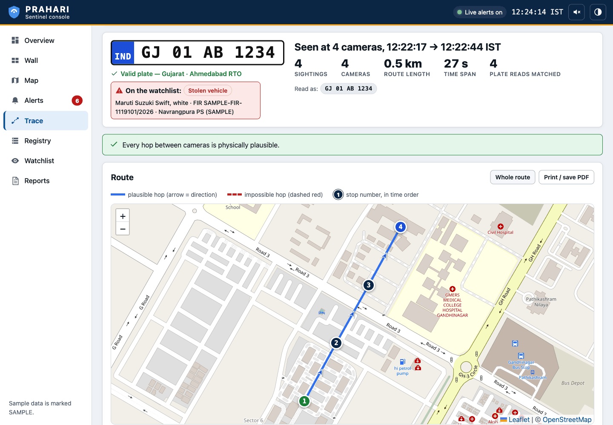
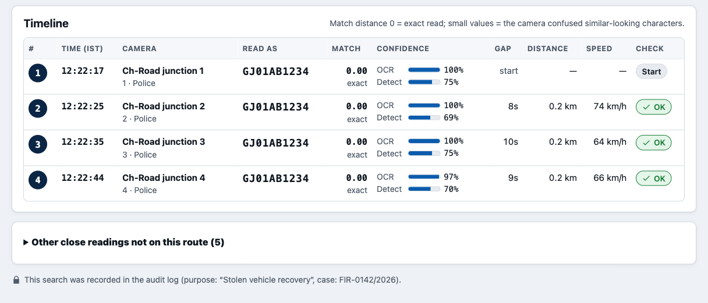
Designed extensions. (a) Road-network travel times (OpenStreetMap graph) instead of straight lines, for tighter plausibility gates. (b) Re-ID bridging: when the plate is unreadable at a camera between two confident plate sightings, candidate vehicles there are ranked by appearance embedding, type and colour, and accepted only if the travel times on both sides are feasible; each bridged hop is labelled “Re-ID” with its confidence, never presented as a plate read. (c) Make/colour cross-check against VAHAN to surface cloned plates.
FRS is the most intrusive analytic a State can run. PRAHARI’s design treats it as an exception, not a feed-wide default:
About two-thirds or more of the State’s cameras watch places where no plate is visible (§2.4, A6). For them, the same node runs different analytics chosen by scene class, emitting new event types on the same contract: person and vehicle detection and counting (depots, platforms), crowd density (pilgrimage centres, hospitals), intrusion and after-hours activity (godowns, PDS shops, offices), loitering. These reuse the detection runtime and the alert workflow; each is validated per scene type before it can raise alerts.
Built: two classes — alert (confident match; red) and review (weaker match that a person must confirm; amber) — plus watchlist category, match distance and score on every item; filters by kind and status (open, acknowledged, all); open count on the navigation badge; newest first; items that arrived while the page was open are highlighted.
Designed: a priority matrix combining category and confidence, configurable per department, with acknowledgement targets that drive escalation:
| Priority | Condition (default) | Acknowledge within | Escalate to (if not acknowledged) |
|---|---|---|---|
| P1 | Alert on stolen vehicle, wanted or missing person | 2 minutes | District Netram shift supervisor; then State control room |
| P2 | Alert on blacklisted or suspect vehicle | 10 minutes | District supervisor |
| P3 | Review items (any category) | Within shift | Review queue owner |
Times are proposals for the Department to set; they are not operational commitments.
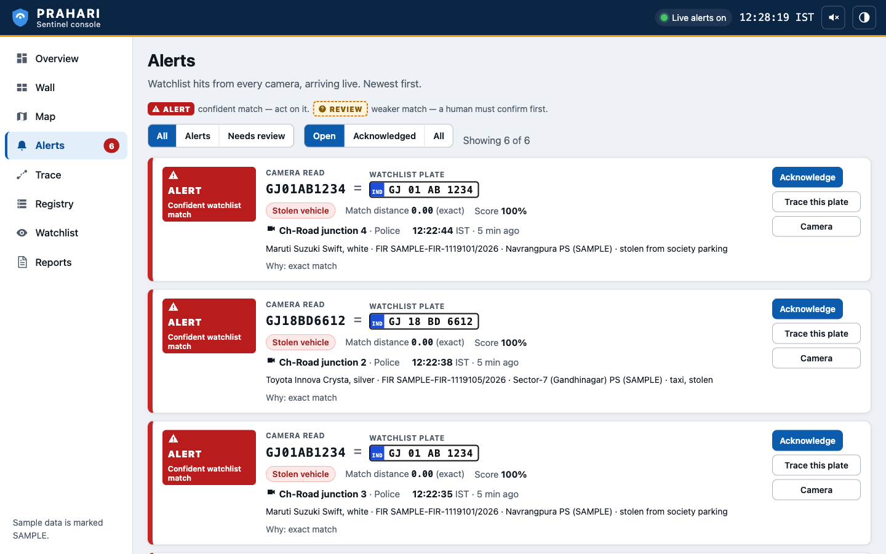
| Channel | Behaviour | Status |
|---|---|---|
| Console, live | Server-Sent Events at /api/alerts/stream: one JSON alert per message; on connect, optional replay of the N latest open alerts; keep-alive every 15 s; client reconnects after 3 s. A slow client drops its oldest queued items instead of slowing ingestion. | Built |
| API / other systems | GET /api/alerts (filters: status, kind, since); acknowledgement via POST /api/alerts/{id}/ack | Built |
| District console routing | Alerts routed to the Netram centre of the camera’s district; State control room sees all | Designed |
| SMS / mobile push to field units; Dial-112 dispatch | For P1 alerts, through the State’s existing messaging and emergency-response systems where the Department permits | Designed |
| Case write-back | Alert outcome recorded against the case in eGujCop, if permitted | Designed |
| Threat | Control | Status |
|---|---|---|
| Compromise of a department network through the integration | Outbound-only nodes; no inbound port, no public IP; the node needs only read-only stream credentials | Designed |
| Rogue node injecting false events | mTLS with a per-node certificate from a State CA; gateway binds each node to its registered cameras; events for unknown cameras are reported | Designed (unknown-camera report built) |
| Interception on the WAN | TLS 1.2+ on every hop; no plaintext event or video transport | Designed |
| Insider trawling movement data | Purpose + case ID required for trace, plate search and watchlist search; every such query audited; RBAC and department scoping | Purpose binding Built; RBAC Designed |
| Tampering with the record of who looked at what | Append-only audit table (database triggers) + SHA-256 hash chain + on-demand verification + external anchoring of the head hash | Built (anchoring Designed) |
| Tampering with evidence | Hash at the edge at capture; signed manifest; write-once storage for case evidence | Designed |
| Credential leakage | Credentials stripped from URLs in logs and status; sensitive keys redacted in audit parameters; secrets outside code | Built (vault Designed) |
| Resource exhaustion (disk, memory) | Bounded memory per camera; evidence cap; writes stop below a disk floor; slow SSE clients drop oldest | Built |
| Unauthorised console / API access | Today: server binds to 127.0.0.1 by default, operator identity is self-asserted. Production: SSO, RBAC, restricted CORS, rate limits, WAF at the gateway | Designed |
Built today: every write and every sensitive read records an actor, taken from the X-Actor header. This is accountability without authentication and is adequate only for a controlled demonstration. Production uses State single sign-on (OIDC) with the following roles, each scoped to departments and districts:
| Capability | Control-room operator | Investigator | Supervisor | Dept. admin | Auditor | System admin |
|---|---|---|---|---|---|---|
| Wall, map, camera health | ✓ | ✓ | ✓ | own dept | — | — |
| View and acknowledge alerts | ✓ | ✓ | ✓ | — | — | — |
| Trace / plate search (purpose + case) | — | ✓ | ✓ | — | — | — |
| Request clip / live view | — | request | approve | — | — | — |
| Add / import watchlist entries | — | propose | approve | — | — | — |
| Authorise FRS for a case | — | — | ✓ | — | — | — |
| Onboard / edit cameras | — | — | — | own dept | — | ✓ |
| Read and verify audit log | — | — | own actions | — | ✓ | — |
| Configuration, keys, deployment | — | — | — | — | — | ✓ (no data access) |
GET /api/trace/{plate}, GET /api/watchlist/search and GET /api/events?plate=… refuse to run (HTTP 400, purpose_binding_required) unless both purpose and case_id are supplied. The console asks for both before a trace. The query, its parameters, the actor, the purpose, the case and the result count are written to the audit log; plates CSV exports are audited too. This makes every look-up of a person’s or vehicle’s movement attributable and reviewable (test: tests/test_registry_audit.py).
prahari/registry/audit.py). The first entry links to a genesis value of 64 zeros.UPDATE or DELETE on the table; writes use an immediate transaction so the chain stays linear under concurrency.GET /api/audit/verify recomputes the chain and reports the first entry whose content or link fails, or returns the current head hash. Editing, deleting or re-ordering any entry — even by someone who drops the triggers — is detected.| Element | Behaviour | Status |
|---|---|---|
| Detection record | Every plate event keeps camera, capture time (from PTS), raw OCR text, corrected plate, candidates with edits, confidences, bounding box and evidence-crop path; stored unchanged | Built |
| Evidence crop at capture | Context crop with the plate boxed, written at detection time and linked to the event | Built |
| Hash at the edge | SHA-256 of each crop and clip computed on the node at capture, stored in the event, re-verified on upload and on export | Designed |
| Signed manifest | Camera, PTS and wall-clock time, node identity, model name and version that produced the detection, operator, case, purpose, hashes; signed with the node’s key and countersigned centrally | Designed |
| Export bundle | Crops/clips + manifest + audit extract + verification tool, verifiable offline by a third party (e.g. a forensic laboratory) without the platform | Designed |
| Case hold | Evidence linked to a case moves to write-once storage and is exempt from routine deletion | Designed |
In the reference build the evidence folder has a size cap (oldest removed first) because it runs on laptops; production retention follows §10.8 with case holds.
Built: catalogue tokens and settings come from one local file (prahari.env) or environment variables, never from code; stream credentials are removed from URLs before logging or display; audit parameters named like token, password, authorization are redacted. Designed: secrets in a central vault or HSM, per-node certificates issued at enrolment and rotated automatically, revocation list checked at the gateway.
Surveillance data about people’s movements is personal data. Even where law-enforcement processing may fall within exemptions under the DPDP Act 2023, the design keeps the Act’s principles, because the Supreme Court’s Puttaswamy judgment requires any State intrusion into privacy to have a legal basis, a legitimate aim, proportionality and procedural safeguards.
| Principle | Mechanism in PRAHARI | Status |
|---|---|---|
| Data minimisation | No central video; only plate events and small crops travel; FRS off by default | Built |
| Purpose limitation | Purpose and case ID mandatory for movement queries | Built |
| Accountability | Tamper-evident audit of queries, exports, watchlist and registry changes | Built |
| Accuracy | Alert vs review split; ranked evidence; implausible hops flagged; human acknowledgement | Built |
| Storage limitation | Tiered retention, enforced automatically (below) | Designed |
| Security safeguards | §10.1–10.7 | Partly built |
| Oversight | Auditor role; periodic audit reports; published impact assessment before FRS | Designed |
| Data | Proposed default | Storage tier |
|---|---|---|
| Raw video | Not stored by PRAHARI; remains in the department recorder under its existing retention (7–15+ days) | Department |
| Plate events with no watchlist hit | 90 days searchable, then compressed to 1 year, then deleted | Hot → warm |
| Evidence crops with no hit | 90 days | Object store |
| Clips pulled for a case | 30 days unless placed on case hold | Object store |
| Events, crops and clips linked to a case | For the life of the case and any statutory period (sizing assumes up to 7 years) | Cold, write-once |
| Audit log | Not deleted within the system’s life | Replicated |
| Tier | What police get | Owner’s controls |
|---|---|---|
| Registered (default) | Location and contact in the registry; footage requested manually for a case | Owner may leave at any time |
| Shared on request | Clip pull through a node for a specific case, with owner notification | Consent record with scope and expiry; owner can revoke; every pull audited and visible to the owner |
| Live-integrated | Camera analysed like a government camera (ANPR at a gate facing a public road) | Explicit consent artefact per camera; public-facing field of view only; revocable; periodic renewal |
The registry already records every camera’s source and ownership; the consent artefact, scope and revocation flag are fields added to the camera record in the pilot.
| Unit | Where | Role | Count (§12) |
|---|---|---|---|
| EDGE-S node | Departmental NVR sites | Adapters, decode (Quick Sync), ANPR on iGPU/NPU, light analytics, disk queue. Runs on an existing PC beside the NVR where one is available. | ~3,455 |
| EDGE-M node | Rugged or unconditioned sites | Same software on a fanless Jetson Orin NX with hardware H.265 decode | as needed |
| EDGE-L server | Netram centres | Regional node for VISWAS and for sites without local compute; batched GPU inference; 2 TB queue | 83 (166 L4) |
| Regional server pair | Netram centres | District alerting with a local watchlist cache (works through a central outage), 7-day event cache, clip/live relay, district console | 68 |
| Central application hosts | State Data Centre | Kubernetes: gateway, bus, screening, API/console/search, registry/GIS, auth, audit, monitoring | 4 |
| Central database hosts | State Data Centre | PostgreSQL + PostGIS + TimescaleDB, primary + synchronous standby (standby serves search/trace reads) | 2 |
| Object-storage hosts | State Data Centre | Crops, clips, case evidence; erasure coding 4+2; object lock for case evidence | 6 |
| DR site | Second Government DC or national government cloud, different seismic zone | Warm standby: 50% compute, async database replica, full object store | 9 hosts |
| Concern | Approach | Status |
|---|---|---|
| Install | Reference build: pip install -r requirements.txt, one settings file, python run.py; python run.py doctor checks Python, packages, models, disk, database, catalogue and opens two real streams, with a fix for every failure. Runs on macOS, Windows and Linux, offline after install. | Built |
| Packaging | Signed OCI images for node and central services; an appliance image for EDGE-S/M; offline installation bundle for air-gapped sites. | Designed |
| Node enrolment | Department admin issues a one-time enrolment token in the registry → node generates a key and certificate request → State CA issues a certificate bound to the site → node downloads its camera assignment from the registry and starts. No manual camera configuration on the node. | Designed |
| Updates | Staged rings (pilot district → one district per department → all), health-gated, with automatic rollback. Models versioned; the model version is recorded with each detection. | Designed |
| Environments | Practice grid (built-in synthetic cameras, separate database) for training and demos; replica grid for soak and failure tests; staging with recorded fixtures of each VMS adapter; production. | Practice/replica Built |
| Field support | One field engineer per district, 5% cold spares; a failed node degrades analytics only — the NVR keeps recording. | Designed |
This section is generated from the team’s sizing model and reproduced here with section numbers and cross-references adapted to this document. Scaling mechanics, high availability and disaster recovery from the same model are presented in §13.
The sizing model is generated from bench/sizing_model.py. Every table below comes from that script. To test a different assumption, edit the field in the Assumptions class and re-run:
.venv/bin/python bench/sizing_model.py # prints every table and writes docs/hld/sizing.json
Labels. Every number has one of four labels. measured means a file or benchmark in this repository, cited by path. given means it comes from the organisers or the public record. price means a market price, cited in §12.11. assumed means our estimate, with its basis and a confidence rating. Anything else is derived, and the formula is shown. All money is in ₹, excluding 18% GST. 1 lakh (L) = 10⁵ and 1 crore (Cr) = 10⁷. The figures are accurate to about ±30% and are rounded to match. We do not claim more precision than that.
| PRAHARI (federated) | Model 4 (central VMS + AI) | |
|---|---|---|
| Sustained backbone | 0.21 Gbps avg / 0.45 Gbps peak | 160 Gbps at 2 Mbps; 320 Gbps at 4 Mbps |
| Ratio | ~360× at peak (750× on averages) | |
| Plate events | 124 M/day. 1,400/s average, 3,100/s peak | same |
| Edge / GPU compute | 83 GPU servers (166 L4) at 34 Netram + 3,455 edge mini-PCs | 2,000 GPUs as usually specified (224 L4s for the same analytics) + 445 recording servers |
| Central storage | ~210 TB logical / ~630 TB raw (all copies, erasure coding and DR included) | 52 PB for 30 days of video, one copy |
| Capex | ₹49 Cr | ₹101 Cr (best case) to ₹175 Cr (as specified, infrastructure only). ₹312 Cr with commercial licences |
| Opex per year | ₹18 Cr | ₹84–95 Cr (infrastructure only). ₹119 Cr with licence support |
| 5-year TCO | ≈ ₹130 Cr | ≈ ₹510–640 Cr (infrastructure only). ≈ ₹870 Cr with licences |
| Per camera | ₹6,100 capex; ₹3,300 per year all-in over 5 years | ₹12,700–21,800 capex; ₹12,800–16,000 per year |
The fairest single comparison sets PRAHARI against the Model 4 best case: the same analytics, no licences, and only the GPUs it actually needs. That comparison is ₹130 Cr vs ₹510 Cr over 5 years, about 4×. The difference is mostly the WAN bill, which recurs every year.
| Earlier claim | Status | Corrected figure |
|---|---|---|
| First-principles estimate (§3.3): "160 Gbps → 0.39 Gbps, ~400×" | The arithmetic is correct for its inputs. Recomputed: 24,000 cams × 0.2 veh/s = 415 M events/day. At 200 B + 10 KB each, that is 392 Mbps, or 410×. But the inputs are off, and in both directions. The estimate assumed 3.4× too many plate events: 0.2 veh/s around the clock on every traffic-facing camera, including departmental gates. It also assumed 1.5× too small a crop. It left out telemetry, clip pulls and protocol overhead. And it compared average flows, while a link has to be provisioned for the peak. | Average ≈ 0.21 Gbps; peak hour ≈ 0.45 Gbps. The ratio is ~750× on averages and ~360× at peak. For a link you have to buy, peak is the honest basis. Across every sensitivity case the ratio stays between 110× and 5,500×. Recommended headline: "160 Gbps → under 0.5 Gbps at peak (~350×)". The conclusion stands. The number changes. |
| First-principles estimate (§3.2): "~2,000 central GPUs vs ~0" | Overstated. 2,000 GPUs buys continuous analytics at full video rate. A central system that ran the same 1-fps ANPR + 0.2-fps light analytics as PRAHARI would need about 224 L4s. In the central case, decode is the limit, not inference. PRAHARI also has GPUs: 166 L4s at the Netram centres, plus about 3,450 small edge nodes. | The case against Model 4 does not rest on GPUs. It rests on WAN bandwidth (≈ ₹60 Cr/yr) and 52 PB of video storage. Those two costs remain even in the most favourable version of Model 4 (§12.8). |
| README of the reference build: "roughly 40 cameras at one frame per second" per machine | That is the naive figure: 1000 / 21 ms = 47. It is correct for synthetic frames on the M1. | Planning figure: ~14 ANPR streams per M1-class worker at 1 fps, after a ×2 safety factor for real footage and 60% target utilisation (§12.5). |
| README of the reference build: 48-camera stability figures (43% / 369 MB keyframes; 181% / 581 MB full decode) | Superseded: the 48-stream runs were repeated and saved in docs/hld/evidence/stability48-*.json (§12.7.3): keyframes ≈ 49% of a core, ~400 MB; full decode at 5 fps ≈ 168% of a core, ~560 MB; 48/48 live, 0 reconnects. | This model uses the 12-camera files. They agree per camera: full decode 3.7% vs 3.8% of a core per camera. |
Only the assumptions that matter are listed here. The full list, with comments, is at the top of bench/sizing_model.py.
| # | Assumption | Value | Label and basis | Confidence |
|---|---|---|---|---|
| A1 | Cameras statewide | 80,000 | given: organisers | high |
| A2 | VISWAS cameras (police) | 17,500 | given: ph-I ~7,000 at ~1,200 junctions/entry points in 41 places + ph-II ~10,500 (Surat, Vadodara, 52 municipalities, 80 border points) | high |
| A3 | VISWAS video already terminates at the 34 Netram centres | yes | assumed: Netram is the district command-and-control centre that views VISWAS feeds | medium-high |
| A4 | Traffic-facing (ANPR-viable) share, VISWAS / departmental | 60% / 20% → 29% overall | assumed. VISWAS is sited at junctions and entry points. Departmental cameras are mostly corridors, counters and yards (§2.4, A6). CCAP measures this per camera (plate legibility, plate px height), so the registry discovers the true share in the first weeks of Phase 1. It is not a planning guess we are stuck with. | medium / low |
| A5 | Vehicles per ANPR camera per day, VISWAS / departmental | 12,000 / 2,000 | assumed: one approach of an urban junction averages ~500/h over the day. Gates and frontage roads carry far less | medium / low |
| A6 | Read yield (deduplicated plate events per vehicle pass) | 0.8 | assumed: two-wheeler plates are rear-only; occlusion; night | medium |
| A7 | Peak-hour share of daily traffic (K-factor) | 9% → peak/avg = 2.16 | assumed: standard traffic-engineering range 8–10% | high |
| A8 | ANPR analysis rate | 1 fps at junctions; 4 fps at the 10% of cameras on highways and entry points → mean 1.3 fps | derived: at 60 km/h a vehicle crosses a ~15 m view in 0.9 s, so 1 fps can miss it | medium |
| A9 | Light analytics (person / crowd / intrusion) | 0.2 fps, 50 events/cam/day, 10% with an image | design / assumed | low |
| A10 | Event size on the wire | 550 B (+15% TLS/HTTP framing) | measured: mean JSON of stored plate events incl. 5 ranked candidates, data/demo.db, 281 rows = 547 B | high |
| A11 | Evidence crop (plate + vehicle context) | 15 KB | assumed. measured synthetic plate crops average 5.2 KB (360×141, 2,196 files in data/evidence/). Real footage is noisier, and a vehicle crop is added | medium |
| A12 | Clip pulls | 2,000/day × 30 s × 4 Mbps | assumed: ~60 per district per day | low |
| A13 | ANPR cost per frame (M1) | 21 ms p90 at 960 px with a plate; 3.8 ms without; 40.8 ms at 1280 px | measured: prahari.anpr.bench, saved in docs/hld/bench-anpr-m1.json (CoreML detector, CPU OCR) | high (for M1, synthetic) |
| A14 | Software decode cost (M1) | 0.39% of one core per Mpix/s → 20% of a core per 1080p25 stream | measured: 12 cams, 111.7 Mpix/s, 43.8% CPU, data/stability-20260924-225251-full5-22642.json | high (for M1) |
| A15 | Keyframe-only decode (M1) | 0.52% of a core per camera | measured: data/stability-20260924-224549.json (12 cams, 6.2%) | high |
| A16 | Production safety factor on per-frame cost | ×2 | assumed: real 1080p footage, more plates per frame, night, bigger production models | medium |
| A17 | Target utilisation | 60% | design: headroom for bursts, reconnect storms, rebuilds | high |
| A18 | ANPR cameras whose GOP ≤ 1 s (keyframe decode is enough) | 30% | assumed. The rest need full decode. CCAP reads the GOP from the stream | low |
| A19 | Departmental NVR sites | 50% × 6 cams, 35% × 20, 15% × 60 → mean 19 → ~3,300 sites | assumed. The registry replaces this with real data | low |
| A20 | Relative performance vs one M1 worker | EDGE-S ×1.5, EDGE-M ×2, EDGE-L (2× L4) ×20 | assumed: not measured on the target hardware | low-medium |
| A21 | Hardware decode capacity (1080p25 streams) | EDGE-S 24, EDGE-M 18, EDGE-L 256 | Orin NX: 18× 1080p30 H.265 (NVIDIA datasheet). L4: 4 NVDEC (datasheet) × ~32 streams each (assumed). QuickSync 24 (assumed) | medium |
| A22 | Event row on disk (hot) | 1,050 B incl. indexes | measured upper bound: data/demo.db 294,912 B / 281 rows | medium |
| A23 | Retention | events hot 90 d, warm to 1 y; crops 90 d; clips 30 d; case-linked events, crops and clips cold for 7 y | policy (§10.8). We deliberately do not keep all plate reads for 7 years (DPDP proportionality). The UK NAS keeps them 1 year | policy |
| A24 | Model 4 video | 2 Mbps/cam, 30 d retention, 40 streams/GPU, 600 Mbps per recorder, 4,000 WAN sites | assumed (first-principles estimate, §3.2) | medium |
| A25 | WAN price, Model 4 | ₹250 per Mbps-month on 1.25× sustained | price: ILL ₹25–38k/month for 100 Mbps (₹250–380/Mbps); ₹1.5 L for 1 Gbps (₹150/Mbps) | low: the biggest swing factor (§12.9) |
| A26 | DC facility | ₹15,000 per kW IT per month, all-in | price: Indian colocation ₹8k–25k/kW-month. Cross-check: ₹9/kWh × 730 h × PUE 1.6 = ₹10.5k for power alone | medium |
| A27 | Power | ₹9/kWh | price: Gujarat HT effective ₹7.5–8.5/kWh; LT commercial is higher | medium |
| A28 | AMC | 8% of hardware per year, from year 2 | assumed: typical Indian government AMC after warranty | medium |
| A29 | Staff (loaded, per year) | 12 NOC/SOC @ ₹15 L; 33 field engineers @ ₹8 L; PRAHARI platform team 15 @ ₹25 L; Model 4 +12 DC ops | assumed | medium |
| A30 | Commercial licences (Model 4 only) | VMS ₹5k/channel, ANPR ₹30k/channel, basic analytics ₹5k/channel, +20%/yr support | assumed: low. Shown separately so no conclusion depends on it | low |
| quantity | value | how |
|---|---|---|
| camera mix | 23,000 ANPR + 57,000 light (29% ANPR) | A2 × A4 |
| events/day | 124 M plate + 2.8 M light | ANPR cams × A5 × A6 |
| events/s | 1,400 avg / 3,100 peak hour | ÷ 86,400; × 2.16 |
| GB/day | events 68 · crops 1,820 · telemetry 86 · clips 30 → ~2.3 TB/day | × A10, A11, 100 bps/cam, A12 |
| events only (text, no images) | 7 Mbps statewide average | |
| everything | 210 Mbps avg / 450 Mbps peak | |
| mean district (1/33) | 6.4 Mbps avg / 13 Mbps peak | |
| largest district (15% of cameras) | ~67 Mbps peak | |
| largest Netram (Surat or Vadodara, ~30% of VISWAS) | ~110 Mbps peak | |
| Model 4 video | 160 Gbps at 2 Mbps; 320 Gbps at 4 Mbps; 1.73 PB/day | 80,000 × bitrate |
| ratio | ~750× average; ~360× peak |
Crops are 80% of PRAHARI's traffic. The bandwidth ladder therefore controls cost mainly through crops. At tier 2 (crops only for watchlist hits), statewide peak falls to ~30 Mbps.
| site | share of sites | tier 3/4 avg | tier 3/4 peak | tier 1 (events only, zstd) | tier 0: offline days a 100 GB queue holds | a 30 s clip at 512 kbps |
|---|---|---|---|---|---|---|
| 6 cams | 50% | 4 kbps | 25 kbps | 0.2 kbps | > 1 year | 4 min |
| 20 cams | 35% | 13 kbps | 83 kbps | 0.6 kbps | > 1 year | 4 min |
| 60 cams | 15% | 38 kbps | 250 kbps | 1.7 kbps | 240 days | 4 min |
What this means for the low-bandwidth strategy. A departmental site needs tens of kbps, not Mbps. A 4G dongle or an existing GSWAN or broadband drop is enough. For a departmental site, "offline" is a latency problem. It is not a data-loss problem. The queue does not fill. Only the Netram nodes carry real volume. The largest Netram averages ~50 Mbps, or ~550 GB/day (derived: 110 Mbps ÷ 2.16 × 86,400 s ÷ 8). EDGE-L therefore gets a 2 TB NVMe queue (~3.5 days of outage). Clip pulls are the only transfer that needs bandwidth. On a thin link the clip arrives in minutes rather than seconds, and the console shows its progress.
| Tier | Uplink | Sent | Statewide peak at this tier |
|---|---|---|---|
| 4 | > 10 Mbps | events + crops + thumbnails + live relay on request | ~450 Mbps + relays |
| 3 | 2–10 Mbps | events + crops | ~450 Mbps |
| 2 | 0.2–2 Mbps | events; crops only for watchlist hits | ~30 Mbps |
| 1 | < 200 kbps | events only, zstd-batched | ~6 Mbps |
| 0 | offline | disk queue; replays in order on reconnect | 0 |
Formula (node_streams): streams = 1000 ms × util × perf ÷ (ms per frame × safety × fps). The number of full-decode ANPR streams is also capped at hw_decode × util ÷ (1 − keyframe share).
| class | hardware | price (price/ASSUMED) | power | ANPR @1 fps | ANPR @ mixed 1.3 fps | light-only @0.2 fps |
|---|---|---|---|---|---|---|
| M1 (measured) | 1 worker | – | – | 47 naive → 14 planned | – | – |
| EDGE-S | Mini-PC, Intel Core Ultra (iGPU + NPU + QuickSync), 16 GB, 512 GB SSD | ₹75k (₹55k–1 L) | 35 W | 20 | 16 (inference-bound) | ~590 |
| EDGE-M | Jetson Orin NX 16 GB, fanless, 512 GB NVMe (rugged, no-AC sites) | ₹1.1 L (module ₹49k) | 25 W | 15 | 15 (decode-bound) | ~790 |
| EDGE-L | 2U server, 2× NVIDIA L4, 256 GB, 2 TB NVMe queue (at Netram) | ₹11.5 L | 650 W | 219 | 219 (decode-bound) | ~7,900 |
Decode, not inference, is the edge bottleneck. In software on the M1, one 1080p25 stream costs 20% of a core (measured, A14). Eight cores therefore full-decode only ~23 streams at 60% utilisation. Keyframe-only decode costs ~40× less, but it gives 1 fps only when the camera's GOP is ≤ 1 s. So every production node class has a hardware decoder, and CCAP records each camera's GOP. Where a department allows it, a one-time camera setting change to GOP = fps would double EDGE-L capacity. That is sensitivity case "All ANPR cams keyframe-decodable". Light analytics is almost free: a single node can carry hundreds of those cameras.
| item | count | how |
|---|---|---|
| EDGE-L at Netram (VISWAS) | 49 working + 34 N+1 spares = 83 servers (166 L4) | max(inference, decode) on 10,500 ANPR + 7,000 light, + 1 per Netram |
| Departmental NVR sites | ~3,300 (mean 19 cams) | A19 |
| EDGE-S | 3,290 + 5% spares = 3,455 | one per site. The count is set by the number of sites, not by load. Even a 60-camera site (12 ANPR) fits on one node |
| Edge power | ~170 kW, spread across 3,300 premises |
The departmental edge costs ~₹26 Cr in hardware. We have assumed that every site buys a new node. Where a department already has a PC beside its NVR (i5-class or newer), PRAHARI runs on that PC. At 40% reuse, capex falls by ₹12 Cr (§12.9).
| value | how | |
|---|---|---|
| Ingest | 1,400 events/s avg, 3,100/s peak | §12.4 |
| Rows per year | ~45 billion (124 M/day × 365) | |
| Hot rows (90 d) | ~11 billion, ~12 TB per copy | × 1,050 B (A22) |
| Warm rows (to 1 y, compressed ×5) | ~7 TB per copy | |
| Watchlist screening | 3,100 events/s × 0.5 ms confusion-aware match ≈ 1.6 cores (3 pods, for HA) | assumed 0.5 ms/event |
| Search / trace | 10,000 queries/day, ~0.5/s peak. Each fuzzy query expands to ≤ ~64 candidate plates and probes a (plate, ts) index in daily partitions | assumed |
| Monitoring | ~1.5 M time series (3,538 nodes × 200 + 80,000 cams × 10) | assumed per-node/per-cam series |
At this ingest rate a single PostgreSQL + TimescaleDB primary is enough. It needs daily chunks, a (plate, ts) btree, and a trigram index for partial plates. The write rate is under 10% of what one tuned node handles with batched inserts. Sharding (Citus, keyed by plate hash) becomes necessary only at roughly 10× today's event rate. A columnar store such as ClickHouse is a reasonable alternative for the warm tier. The model does not depend on that choice.
| tier | contents | count |
|---|---|---|
| Central DC (primary) | Kubernetes: ingest gateway ×3, event bus (NATS JetStream / Kafka) ×3, screen/match ×3, API + console + search ×3, registry/GIS/auth/audit ×3, monitoring ×4, control plane ×3 = 220 vCPU | 4 app hosts (2-socket, 512 GB, N+1) |
| PostgreSQL + PostGIS + TimescaleDB: primary + synchronous standby (the standby serves search/trace reads) | 2 DB hosts, ~19 TB NVMe each | |
| Object store (MinIO / Ceph, erasure coding 4+2) for crops, clips and case evidence | 6 storage hosts (12 × 20 TB) | |
| DR site (warm standby) | 50% of app compute, 1 async DB replica, full object store | 9 hosts |
| Regional: 34 Netram | 2 servers per Netram (active/standby): district relay, local watchlist cache and alerting, district console, 7-day event cache, clip relay. Plus the EDGE-L servers from §12.5 | 68 servers + 83 EDGE-L |
| Central IT power (DC + DR) | ~12 kW |
The central tier is small because PRAHARI moves no video to it. That is deliberate. The whole central footprint for statewide PRAHARI (DC + DR, 21 hosts) is smaller than one row of the Model 4 design, which needs 500 GPU servers and 445 recorders.
| tier | TB (one logical copy) | medium | copies |
|---|---|---|---|
| events hot, 90 d | 12 | NVMe, row store | 3 (primary, standby, DR) |
| events warm, 90 d – 1 y | 7 | NVMe/SSD, compressed chunks | 3 |
| events cold, case-linked, 7 y | 0.07 | object store (HDD) | EC 4+2 × 2 sites |
| crops hot, 90 d | 163 | object store | EC 4+2 × 2 sites |
| crops cold, case-linked, 7 y | 5 | object store | EC 4+2 × 2 sites |
| clips hot, 30 d | 1 | object store | EC 4+2 × 2 sites |
| clips cold, case-linked, 7 y | 23 | object store | EC 4+2 × 2 sites |
| event bus, 7-day replay | 1.4 (incl. ×3) | NVMe | ×3 |
| total | ~210 TB logical / ~630 TB raw | ||
| departmental video | not stored centrally. It stays on departmental NVRs at their own 7–15-day retention (given, FAQ). Clips are pulled by case ID | ||
| Model 4 video, 30 d | 51,800 TB = 52 PB (one copy; ~3,240 × 20 TB drives before overhead) |
Crops account for 77% of PRAHARI's central storage. Keeping every plate read for 7 years instead of 1 would add ~15 PB raw. It would also be disproportionate under the DPDP Act. So only case-linked records go to the cold tier.
| PRAHARI | ₹ Cr | Model 4 (as specified, infrastructure only) | ₹ Cr |
|---|---|---|---|
| edge nodes + installation (83 EDGE-L, 3,455 EDGE-S, ₹15k install per node) | 40.5 | 500 GPU servers (2,000 L4) | 82.5 |
| central DC (hosts, NVMe, object store, network) | 2.5 | 445 recording servers | 28.9 |
| DR site | 2.2 | 52 PB video storage | 37.3 |
| regional (68 Netram servers) | 3.4 | core network (100G spine) | 8.0 |
| site WAN installs (4,000 × ₹30k) | 12.0 | ||
| metadata / DR / management | 6.0 | ||
| PRAHARI capex | 48.6 | Model 4 capex | 174.7 |
| + commercial VMS/ANPR/analytics licences, if bought | +137.5 |
| PRAHARI | ₹ Cr/yr | Model 4 (infrastructure only) | ₹ Cr/yr |
|---|---|---|---|
| edge power (170 kW across sites) | 1.3 | WAN bandwidth for video (160 Gbps × 1.25 × ₹250) | 60.0 |
| regional power | 0.3 | DC facility (~630 kW IT) | 11.4 |
| DC + DR facility (~12 kW IT) | 0.2 | hardware AMC | 14.0 |
| central uplinks (2 × 1 Gbps at DC and at DR) | 0.7 | staff (NOC/SOC, DC ops, field) | 6.2 |
| Netram backup links (34 × 100 Mbps) | 1.2 | in-house platform team | 3.8 |
| new links for the 30% of sites without one | 1.8 | ||
| hardware AMC | 3.9 | ||
| staff (platform 15, NOC/SOC 12, field 33) | 8.2 | ||
| total | 17.6 | total | 95.4 (+ licence support 27.5 if licensed) |
Staff is PRAHARI's largest opex line, at 47%. Its infrastructure costs are small. Model 4's largest line is the WAN, at 63%. A field fleet of 3,455 edge nodes is PRAHARI's real operational burden. At a 3–5% annual failure rate that means ~100–170 site visits per year. We budget one field engineer per district plus 5% cold spares, and the NVR keeps recording while a node is down.
| design | capex | opex/yr | 5-yr TCO |
|---|---|---|---|
| PRAHARI (federated) | 48.6 | 17.6 | ~133 |
| Model 4 best case: same 1-fps analytics, 224 L4s, infrastructure only | 101 | 83.5 | ~511 |
| Model 4 as usually specified: 2,000 GPUs, infrastructure only | 175 | 95.4 | ~638 |
| Model 4 as usually specified + commercial licences | 312 | 119 | ~866 |
| phase | months | cameras | EDGE-L | EDGE-S | plate events/day | peak Mbps | capex this phase | opex/yr at end of phase |
|---|---|---|---|---|---|---|---|---|
| 1: VISWAS + 34 Netram | 0–6 | 17,500 | 83 | 0 | ~100 M | ~370 | ₹17.7 Cr | ₹12.5 Cr |
| 2: + departments | 6–18 | 50,000 | 83 | ~1,800 | ~110 M | ~410 | ₹16.1 Cr | ₹15.1 Cr |
| 3: 80k + private opt-in | 18–36 | 80,000 + 10,000 private (registry + clip pull only) | 83 | ~3,450 | ~124 M | ~450 | ₹14.8 Cr | ₹17.6 Cr |
Phase 1 carries the whole central core, DR and all 34 Netram deployments. Staff costs are full-size from day 1. VISWAS produces ~80% of all plate events. The departments add many cameras but few plates. So traffic and central sizing are essentially settled in Phase 1, and Phases 2–3 are mostly a field-deployment exercise.
| case | plate events/day | PRAHARI peak Mbps | ratio @ peak | edge nodes | central raw TB | PRAHARI capex | PRAHARI TCO | M4 best case TCO | M4 infra TCO | M4 + licences TCO |
|---|---|---|---|---|---|---|---|---|---|---|
| Base case | 124 M | 450 | 360× | 3,538 | 630 | 49 | 133 | 511 | 638 | 866 |
| ANPR-capable share 50% (not 29%) | 180 M | 650 | 250× | 4,072 | 900 | 55 | 143 | 522 | 638 | 947 |
| ANPR at 2 fps everywhere | 124 M | 450 | 360× | 4,089 | 630 | 57 | 145 | 521 | 638 | 866 |
| Crop 10 KB | 124 M | 310 | 520× | 3,538 | 470 | 49 | 133 | 511 | 638 | 866 |
| Crop 30 KB | 124 M | 860 | 190× | 3,538 | 1,100 | 49 | 133 | 511 | 638 | 866 |
| Traffic ×2 | 240 M | 880 | 180× | 3,538 | 1,200 | 49 | 133 | 511 | 638 | 866 |
| First-principles traffic (0.2 veh/s on every ANPR cam) | 400 M | 1,400 | 110× | 3,538 | 1,900 | 49 | 134 | 511 | 638 | 866 |
| Safety factor 3 (real footage worse) | 124 M | 450 | 360× | 4,080 | 630 | 56 | 144 | 519 | 638 | 866 |
| All ANPR cams keyframe-decodable (GOP ≤ 1 s) | 124 M | 450 | 360× | 3,538 | 630 | 49 | 133 | 511 | 638 | 866 |
| Reuse existing departmental PCs at 40% of sites | 124 M | 450 | 360× | 2,222 | 630 | 37 | 117 | 511 | 638 | 866 |
| Crops only for watchlist hits (tier 2) | 124 M | 29 | 5,500× | 3,538 | 130 | 48 | 132 | 511 | 638 | 866 |
| Cold 7 y for all events (not recommended) | 124 M | 450 | 360× | 3,538 | 15,000 | 57 | 147 | 511 | 638 | 866 |
| WAN ₹100/Mbps-month (state-owned fibre) | 124 M | 450 | 360× | 3,538 | 630 | 49 | 133 | 331 | 458 | 686 |
| WAN ₹500/Mbps-month (small site links) | 124 M | 450 | 360× | 3,538 | 630 | 49 | 133 | 811 | 938 | 1,166 |
| Model 4 at 4 Mbps | 124 M | 450 | 720× | 3,538 | 630 | 49 | 133 | 920 | 1,046 | 1,275 |
| Model 4 at 7-day retention | 124 M | 450 | 360× | 3,538 | 630 | 49 | 133 | 471 | 597 | 826 |
How to read this table:
The five assumptions that move the result most:
Measured on an Apple M1, 8 GB, with synthetic streams and synthetic plates:
docs/hld/bench-anpr-m1.json.data/stability-*.json.data/demo.db, data/evidence/.docs/hld/evidence/practice-run-runtime-2026-09-24.json).Not measured, and assumed with an explicit margin:
The ×2 safety factor and 60% utilisation are there because the first set is unmeasured. The model is set up so that each of the second set can be replaced by a registry measurement during Phase 1.
What would change our minds:
research/00-official-faqs.txt)camera_id, which preserves per-camera ordering and timestamp monotonicity. Events are partitioned by day in TimescaleDB; a plate-hash shard (e.g. Citus) is needed only at ~10× today’s projected rate. The object store grows by one storage host per ~160 TB usable.| Item | Detail | Status |
|---|---|---|
| Per-camera health | State, measured fps, codec, resolution, frames decoded/emitted, reconnects, discontinuities, decoder warnings by kind, decode errors, last error, last-frame age, next retry; written to the registry every 10 s | Built |
| Service health | /api/health (database size and counts, disk, live subscribers); /api/runtime (cameras, plate-reader state and throughput, disk); run.py doctor | Built |
| Soak / stability harness | python -m prahari.node.stability: runs every catalogue camera, prints a table every 10 s, writes a JSON summary, exits non-zero if any camera never went live | Built |
| Metrics and logs at scale | Node heartbeat every 30 s; metrics by remote-write to VictoriaMetrics/Mimir (~1.5 million series), logs to Loki, Grafana dashboards alongside the registry map | Designed |
| Alert rules | Camera offline > 5 min · node silent > 2 min · queue depth > 1 h · ingest lag > 60 s · clock skew > 2 s (timestamps are evidence) | Designed |
| Component | Mechanism |
|---|---|
| Gateway, bus, screening, API | Three replicas across hosts, with quorum for the bus |
| PostgreSQL | Synchronous standby with automated failover (Patroni, < 60 s) |
| Object store | Erasure coding 4+2 across six hosts — survives two host failures |
| Netram tier | Active/standby regional pair; N+1 EDGE-L servers |
| District alerting | Continues through a central outage: each Netram holds a watchlist cache and screens its own district’s events |
| Edge node | Single node per small site; if it fails, only analytics pause — the department recorder keeps recording, so no video is lost, and events resume with a new epoch |
The DR site is a warm standby (full storage, 50% compute) in a different seismic zone from the primary — Kutch is in seismic zone V, so neither site should be there. Options are a second Gujarat Government data centre or the national government cloud.
| Data / service | RPO | RTO | Why achievable |
|---|---|---|---|
| Plate events | effectively 0 | 1 h | Nodes keep events in their disk queue until the central store acknowledges them; the DR site receives the replay |
| Watchlist alerts within a district | 0 | ~0 | Netram screens locally; no central dependency |
| Cross-district alerts, search, trace | < 1 min | 4 h | Asynchronous database replication; warm standby; DNS/VIP switch |
| Evidence crops | < 15 min | 4 h | Bucket replication; edge ring buffer keeps 72 h as a second source |
| Case clips and evidence bundles | 0 once sealed | 4 h | Hash-sealed at the edge and replicated on seal; the department recorder holds the original |
| Audit log | 0 | 4 h | Hash chain replicated; daily head-hash anchor exported offline |
RPO/RTO values are design targets from the sizing model, to be proven in failover drills during Phase 1; they are not measured.
Backup. Continuous WAL archiving to the object store with 14-day point-in-time recovery; nightly logical dumps of registry and watchlists; object lock (write-once) on case-evidence buckets; monthly DR failover drill. Cybersecurity controls for all tiers are in §10.
The Problem Statement asks what information departments must provide so that integration feasibility can be assessed. PRAHARI’s answer is to ask for as little as possible and measure the rest: once a camera’s stream can be opened, the platform itself establishes its codec, resolution, real frame rate, health and whether it can read plates, and writes that to the registry.
| # | Item | Why it is needed | Form | Mandatory |
|---|---|---|---|---|
| 1 | Nodal officer and technical contact | Approvals, access, escalation; owner of the department’s node(s) | Name, designation, phone, e-mail | Yes |
| 2 | List of sites with recorders (NVR/DVR/VMS) and approximate camera counts | Node placement and count; the largest driver of edge cost (§12) | CSV (site, address, recorder, cameras) | Yes |
| 3 | Network reachability at each site | A host on the camera network with outbound HTTPS to one State address; or a route to the nearest Netram centre | Yes/no per site; uplink type | Yes |
| 4 | Stream access | Read-only user on the recorder or cameras; RTSP URL pattern or VMS API access; sub-stream if available | Credentials via secure channel (never e-mail) | Yes |
| 5 | Camera location | Map, coverage-gap analysis and trace plausibility | Lat/long, or address to be geocoded and verified | Yes |
| 6 | Host for the node | An existing PC/VM beside the recorder, or space and power for an edge box | Yes/no; spec if existing | Yes |
| 7 | Legal basis and consent (private cameras) | Consent tier and scope (§10.9) | Consent artefact | Private only |
| 8 | Recorder retention and export method | Clip-on-demand within the retention window | Days; VMS product/version | Recommended |
| 9 | Time synchronisation | Timestamps are evidence; NTP source on the recorder/camera network | NTP server or “none” | Recommended |
| 10 | AMC vendor contact | Faults found by health monitoring can be raised directly | Vendor, contract end date | Optional |
| Property | How it is obtained | Status |
|---|---|---|
| Codec, resolution, real frame rate | From the stream itself (decoder, PTS) | Built |
| Online / degraded / offline, uptime, reconnect history, last error | Capture worker statistics every 10 s | Built |
| Decoder health (warnings, errors) | Counted per camera by kind | Built |
| Plate legibility and ANPR viability, with reason | Capability profiler (§8.5) | Built |
| Coverage gaps, cameras without location or stream, ageing/stale cameras | Gap report over the registry | Built |
| GOP length, bitrate, clock skew, scene type | Stream analysis; ONVIF device time; scene classifier | Designed |
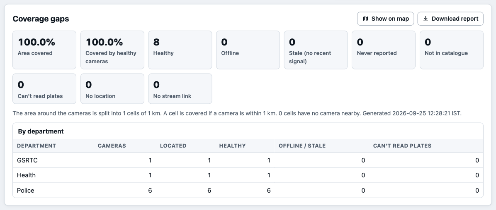
| Department (examples) | Typical camera settings | Primary use in PRAHARI | Specific prerequisite |
|---|---|---|---|
| Home / Police (VISWAS) | Junctions, city entry/exit points, pilgrimage centres | ANPR, watchlist alerts, trace; the bulk of plate events | Rack space and power at each Netram centre for EDGE-L and the regional pair |
| Transport / RTO | Offices, test tracks, check-posts | ANPR at check-posts; blacklist alerts | Check-post uplinks (often thin: ladder tiers 1–2) |
| Food & Civil Supplies | Godowns, PDS shops | Vehicle in/out ANPR at gates; after-hours intrusion (roadmap) | Many small sites: EDGE-S or an existing PC |
| Health | Hospital corridors, OPD counters | Health monitoring; crowd density (roadmap); rarely ANPR | Patient-privacy review before any analytic beyond health monitoring |
| GSRTC | Bus stations, depots, platforms | ANPR at depot gates; crowd and person analytics (roadmap) | Depot recorders usually centralised per division |
| Panchayat / Rural Development | Offices, gates, village squares | Health monitoring; ANPR where a gate faces a road | Weakest uplinks: store-and-forward essential |
| Municipal corporations | City surveillance, traffic, public spaces | ANPR, trace; crowd (roadmap) | Existing city command centres can host regional nodes |
| Private (societies, malls) | Gates, parking, frontage | Registered by default; clip on request; live only by consent | Consent artefact; public-facing view only |
The phasing follows the sizing model (§12). VISWAS produces about 80% of all plate events, so traffic and central sizing are settled in Phase 1; Phases 2 and 3 are mainly field deployment. Month 0 is the start of the engagement; timelines are indicative and depend on procurement and departmental provisioning.
| Phase | Months | Scope | Exit criteria |
|---|---|---|---|
| 0 — Pilot and validation (within Phase 1) | 0–2 | One Netram centre and its VISWAS cameras; two departments’ sites in the same district; central core on a small footprint. Close the “designed” items needed for production: SSO/RBAC, node mTLS and store-and-forward, evidence hashing and manifests. Measure real-footage ANPR accuracy, node hardware throughput, the confusion matrix and matcher performance at 105 watchlist entries. | Measured accuracy and latency reported per camera type; zero-loss replay through a forced outage; security review passed; field figures replace the synthetic ones in this document |
| 1 — VISWAS + 34 Netram | 0–6 | Capex ₹17.7 Cr. ~17,500 VISWAS cameras through 83 EDGE-L servers at all 34 Netram centres; central DC and DR; registry opened to all 26 departments for inventory (Model 1 everywhere, before any streaming); eGujCop watchlist adapter (subject to provisioning) | All VISWAS cameras in the registry with measured capability; district alerting live; DR failover drill passed |
| 2 — Departments | 6–18 | Capex ₹16.1 Cr. Departmental estates to ~50,000 cameras; ~1,800 EDGE-S nodes; ONVIF and first VMS adapters; bandwidth ladder at thin sites; VAHAN enrichment | Each department onboarded with its own health and gap report; per-site uplink within ladder budgets |
| 3 — Statewide + private | 18–36 | Capex ₹14.8 Cr. ~80,000 cameras; ~3,450 EDGE-S nodes; ~10,000 private cameras on consent tiers (registry + clip pull); scene-classified non-ANPR analytics | Target availability met for a full quarter; independent audit of access logs and retention |
| # | Item | Current status | Phase |
|---|---|---|---|
| 1 | Retrain/fine-tune plate detector and OCR on real Indian CCTV, including two-wheeler and two-line plates; re-fit confusion costs from measured errors | Synthetic-only | 0 |
| 2 | Operator SSO, RBAC and department/district scoping; restricted CORS | Self-asserted actor | 0 |
| 3 | Node mTLS gateway link, disk store-and-forward, bandwidth ladder | Designed | 0 |
| 4 | SHA-256 evidence hashing at the edge, signed manifests, offline-verifiable export, audit head anchoring | Audit chain built | 0 |
| 5 | Watchlist matcher index and benchmark at 104–105 entries | Linear scan | 0 |
| 6 | PostgreSQL/PostGIS/TimescaleDB store, event bus, containerised central services, observability stack | SQLite, in-process | 1 |
| 7 | Government-database adapters (eGujCop, VAHAN, SARTHI) with record/replay tests | CSV/API import built | 1–2 |
| 8 | ONVIF discovery and VMS adapters; clip pull and on-demand live view | RTSP/HLS built | 2 |
| 9 | Re-ID bridging for unreadable plates; road-network travel times; vehicle make/colour cross-check | Plate-anchored trace built | 2 |
| 10 | Scene classification; person, crowd, intrusion, loitering analytics | ANPR viability built | 2–3 |
| 11 | FRS under the proportionate design of §8.7, only after a published impact assessment | Not built | 3, if approved |
| Command (from the repository root) | What it does |
|---|---|
python run.py demo | Practice mode: starts a built-in 8-camera RTSP grid and catalogue, the full platform and console at http://127.0.0.1:8000, with a separate database |
python run.py doctor · python run.py | Checks the machine and the real catalogue link; runs the platform on the catalogue in prahari.env |
python -m pytest tests/ -q | Automated test suite (148 tests) |
python -m prahari.node.stability --catalogue URL --seconds N | Ingest soak test; per-camera table and JSON summary |
python -m prahari.anpr.bench · python -m prahari.anpr.evaluate | ANPR throughput and synthetic accuracy (§8.3–8.4) |
python bench/bench_plate_matching.py | Exact vs confusion-space matching benchmark (§7.6) |
python bench/sizing_model.py | Regenerates every sizing and cost table (§12) |
sandbox/rtsp_server.py (+ --loop-pts-reset, --join-mid-gop) | Replica of the Sentinel grid’s behaviours for failure testing; kill and restart it to simulate a gateway outage |
The practice grid (sandbox/demo_grid.py) has eight cameras in Gandhinagar: six along Ch-Road about 150 m apart, a hospital OPD corridor and a GSRTC depot, alternating H.264 and H.265, 960×540 at 10 fps, looping every 40 s. A stolen white Swift, GJ01AB1234, is scripted past cameras 1 → 2 → 3 → 4 about nine seconds apart; a second listed vehicle, GJ18BD6612, passes cameras 2 and 4; other traffic is random. The video is synthetic and exists to prove the plumbing end to end, not accuracy.
| Check | Result measured, practice mode |
|---|---|
| Cameras onboarded from the catalogue and live | 8 of 8 (including the corridor and depot cameras, which the profiler does not treat as plate cameras) |
Trace of GJ01AB1234 | Exactly its 4 scripted cameras, in order 1 → 2 → 3 → 4, with timestamps and plausible hop speeds |
| Watchlist alerts | 6 correct alerts (4 for GJ01AB1234, 2 for GJ18BD6612) and 0 false alerts |
| Plate reads and events | 198 plate reads de-duplicated to 55 events; ~14 ms average per analysed frame (788 frames) |
Runtime counters saved in docs/hld/evidence/practice-run-runtime-2026-09-24.json (59 s after start: 8/8 live, 0 reconnects, 788 frames analysed at 14.4 ms average, 198 plate reads → 55 de-duplicated events → 6 alerts, 0 review items). Repeat live with python run.py demo; it takes about a minute to show the same result. Because clips loop, a later trace shows repeat visits (for example stops 1, 5, 9 at the same camera), which is expected.
All screenshots are of the running reference implementation in practice mode (light theme). Trace (Figures 8.1–8.2), Alerts (Figure 9.2), the coverage-gap report (Figure 14.1) and the API documentation (Figure A.1) appear in their sections.
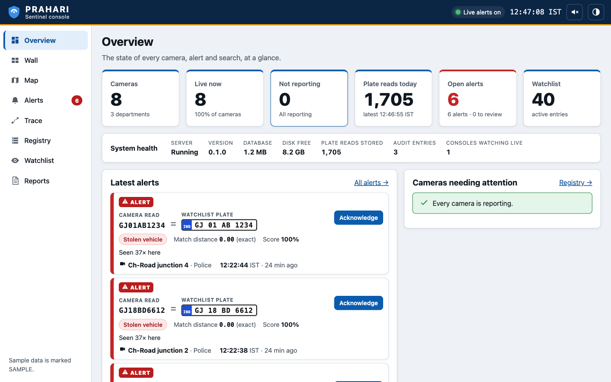
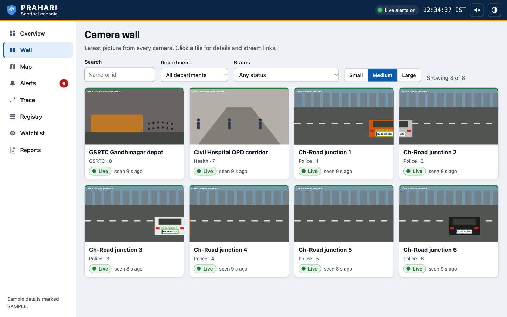
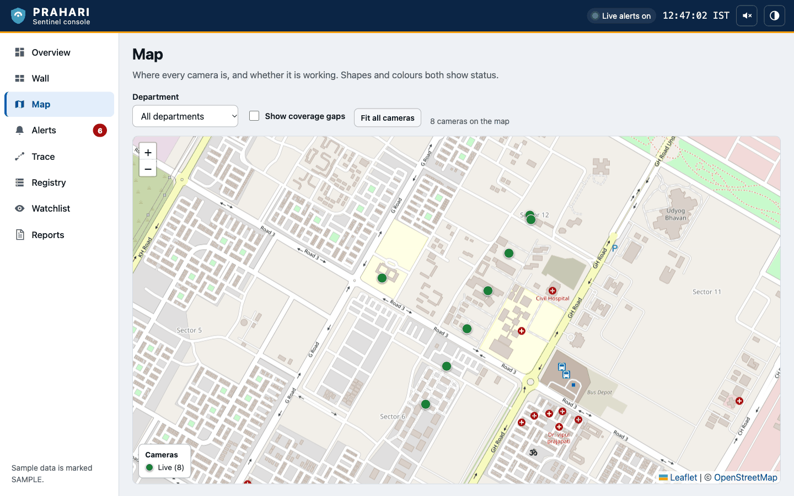
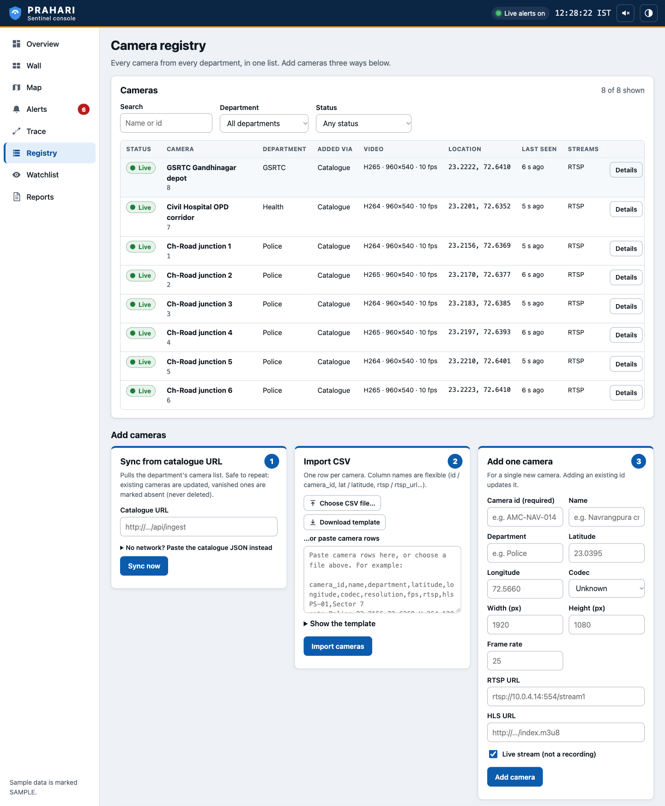
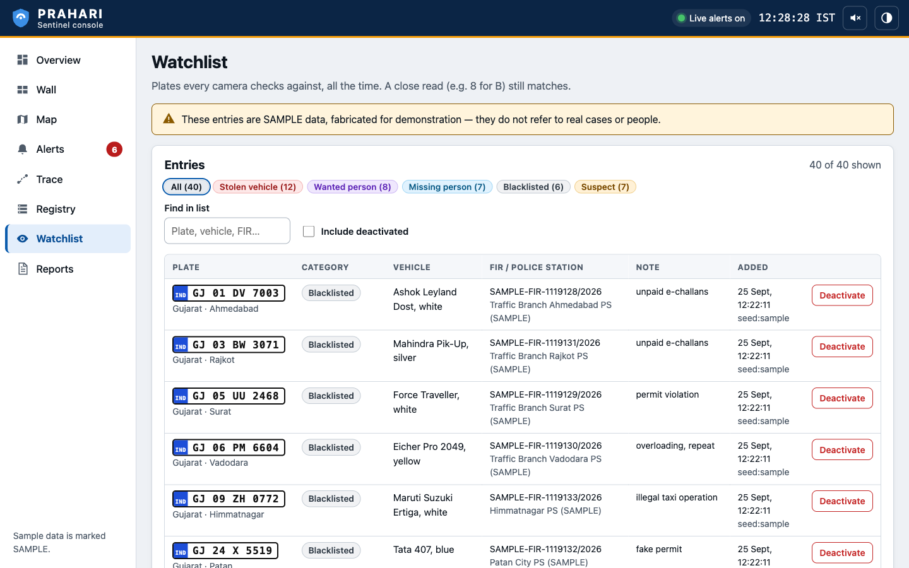
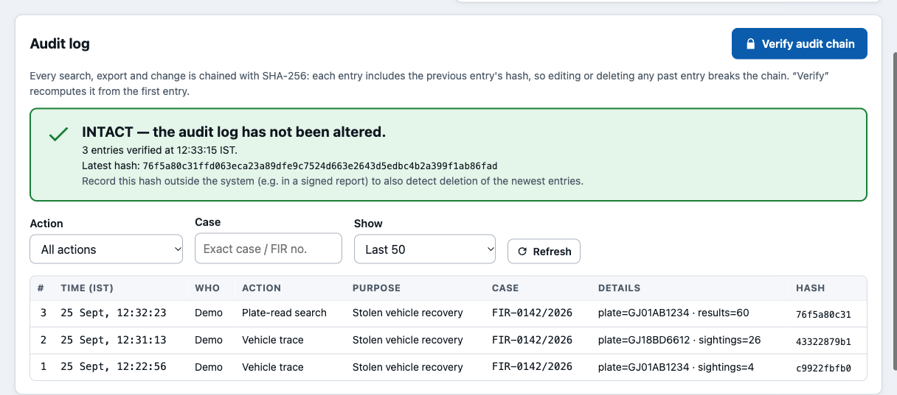
148 tests, all passing (python -m pytest tests/ -q, 7.7 s, 25 September 2026) measured.
| Test file | Tests | What is verified |
|---|---|---|
test_node_catalogue.py | 32 | Tolerant catalogue parsing: wrapped lists, id-keyed objects, alias fields, nested/GeoJSON coordinates, resolutions, fractional fps, live words, URL discovery, duplicates |
test_node_capture.py | 11 | Backoff ladder (capped, jittered, never tight); capture-time offset converges under GOP replay; discontinuity on backward/jump PTS but not on gaps; fps from PTS; PTS rate limiter on uneven sources; credential redaction; manager reconciliation, allow-list and cap |
test_plate_grammar.py | 20 | Formats, State and RTO codes, constrained decoding, confusion distance, watchlist ranking and thresholds |
test_anpr_pipeline.py | 8 | Event contract; synthetic accuracy floor; evidence crop size cap and disk-floor skip; IND-prefix and seam-duplicate repair; multi-frame pass de-duplicates to one event |
test_anpr_twoline.py · test_anpr_dedup.py · test_anpr_ccap.py | 5 · 9 · 5 | Two-line split; per-pass clustering, epochs, best/first modes; capability verdicts and reasons |
test_registry_alerts.py | 18 | Misreads alert on listed plates; different vehicle goes to review, unrelated plate creates nothing; idempotent ingest and alert de-duplication; batch ingest; acknowledgement; SSE replay and live push; purpose-bound watchlist search |
test_registry_trace.py | 9 | Ordering and implausible-hop flagging; far-apart simultaneous sightings; matching via candidates; near-miss fallback never silent; grammar help; fuzzy search; plates CSV |
test_registry_cameras.py | 18 | Catalogue sync over HTTP and inline; bulk CSV/JSON; manual entry, filters and GeoJSON; health merge; gap report |
test_registry_audit.py | 13 | Purpose and case ID required on sensitive endpoints; sensitive queries and writes audited; append-only trigger; tampering detected (edited entry, deleted entry, single entry re-hashed); secrets redacted |
Results on the ~50 government-provided feeds are reported separately in the Government-Feed Demonstration video and its plates output report, which are produced by the same code.
These are the known gaps between the working system and a statewide production service. Each is scheduled in §15.2.
| Limitation | Consequence today |
|---|---|
| Plate accuracy measured only on synthetic plates | Real CCTV (night, glare, blur, dirt, hand-painted fonts, angle) will be harder; no operational accuracy figure is claimed yet |
| Two-wheeler plates weak | Detector finds 13–18% of synthetic two-wheeler plates; two-line plates need ≥ ~48 px |
| Small plates | Plates under ~24 px tall are not readable; such cameras are detected and reported, not fixed |
| No appearance re-identification | A trace breaks where the plate is unreadable; the gap is visible, not bridged |
| Operator authentication not enforced | Operator identity is self-asserted; suitable for a controlled demonstration, not open deployment |
| Single-process, SQLite reference build | Laptop-scale by design; production services, bus and PostgreSQL are designed, not built |
| Node link not yet production-grade | No mTLS gateway, disk store-and-forward or bandwidth ladder; events reach central ingest in-process |
| Evidence hashing and signed manifests not built | Audit log is tamper-evident; evidence crops are not yet individually hashed |
| Government-database adapters not built | Watchlists are loaded by CSV/API |
| FRS and non-ANPR analytics not built | Non-traffic cameras get health monitoring and the video wall only |
| Wall shows snapshots | ~2 s refresh of the latest frame; live-motion view is designed |
| Matcher and trace simplifications | Matching benchmarked at 200 watchlist entries; confusion costs hand-set; plausibility uses straight-line distance |
| Production hardware not benchmarked | Edge node classes in §12 are sized from M1 measurements with a ×2 safety factor |
Generated from the application’s OpenAPI schema (create_app().openapi(), version 0.1.0) plus three live endpoints added by the runtime (prahari/runtime.py). Interactive documentation is served at /docs. Times accept unix seconds or ISO 8601 (naive = IST); responses carry unix ts and IST *_iso. Endpoints marked PB are purpose-bound: they require purpose and case_id and are audited. X-Actor carries the operator identity.
| Method | Path | Tag | Summary |
|---|---|---|---|
| GET | /api/health | system | Service health and database stats |
| GET | /api/cameras | cameras | List / filter cameras (department, status, codec, source, live, bbox, q) |
| POST | /api/cameras | cameras | Onboarding path 3: add or update one camera manually |
| GET | /api/cameras.geojson | cameras | Cameras as GeoJSON (GIS layer) |
| POST | /api/cameras/sync | cameras | Onboarding path 1: sync from a catalogue URL or inline payload |
| POST | /api/cameras/import | cameras | Onboarding path 2: bulk import (CSV or JSON body) |
| GET | /api/cameras/{camera_id} | cameras | One camera |
| DELETE | /api/cameras/{camera_id} | cameras | Remove a camera (its plate events are kept) |
| POST | /api/cameras/{camera_id}/health | cameras | Heartbeat / measured capability from a node |
| GET | /api/cameras/{camera_id}/snapshot.jpg | live | Latest frame from a camera (JPEG, with plate boxes) |
| GET | /api/watchlist | watchlist | List watchlist entries |
| POST | /api/watchlist | watchlist | Add or update a watchlist entry |
| POST | /api/watchlist/import | watchlist | Bulk import (CSV body) |
| GET | /api/watchlist/search PB | watchlist | Rank watchlist entries against an observed plate |
| GET | /api/watchlist/{plate} | watchlist | One watchlist entry |
| DELETE | /api/watchlist/{plate} | watchlist | Deactivate an entry (soft delete) |
| POST | /api/events/plate | events | Ingest one PlateEvent (idempotent; screened; may raise alert/review) |
| POST | /api/events/batch | events | Ingest a batch of PlateEvents (store-and-forward flushes) |
| GET | /api/events PB with plate | events | Search plate events (fuzzy); latest events without plate |
| GET | /api/alerts | alerts | List alerts and review items |
| POST | /api/alerts/{alert_id}/ack | alerts | Acknowledge an alert, with note |
| GET | /api/alerts/stream | alerts | Live alerts (Server-Sent Events) |
| GET | /api/trace/{plate} PB | trace | Reconstruct a vehicle’s route across cameras (JSON or GeoJSON) |
| GET | /api/reports/gap | reports | Coverage-gap analysis (JSON or Markdown) |
| GET | /api/reports/plates.csv | reports | Every detected plate with camera, location and timestamp (CSV; audited) |
| GET | /api/audit | audit | Recent audit entries |
| GET | /api/audit/verify | audit | Recompute and verify the hash chain |
| GET | /api/runtime | live | Live status: cameras, plate reader, throughput, disk |
| GET | /api/evidence/{camera_id}/{filename} | live | An evidence crop saved with a plate event |
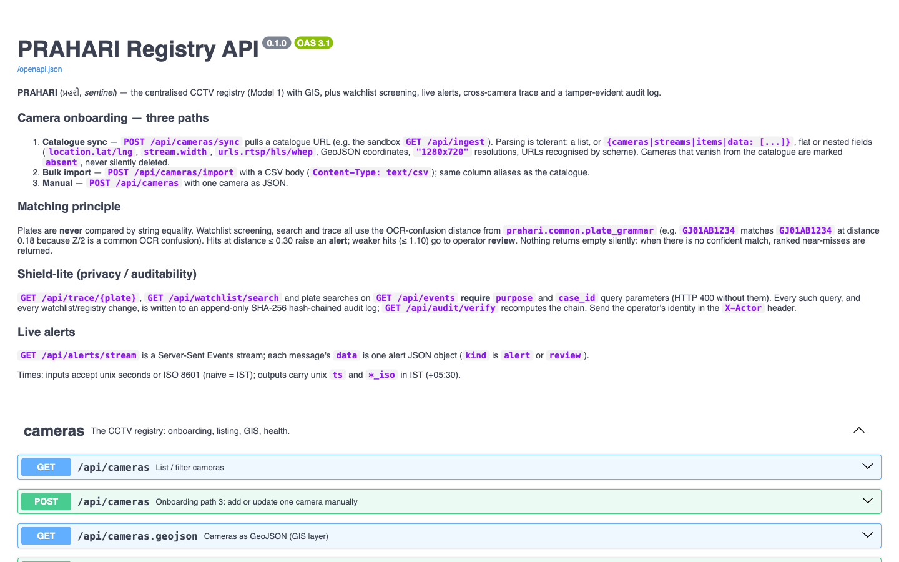
/docs.Request schemas: CameraIn, SyncIn, HealthIn, WatchlistIn, PlateEventIn, AckIn (prahari/api/models.py). Errors: 400 for validation and missing purpose binding (purpose_binding_required), 404 for unknown ids, 502 for an unreachable catalogue, 507 when the disk is below its safety floor.
prahari/common/contracts.py)| Field | Type / meaning |
|---|---|
id | str, stable camera id |
name, department | str |
lat, lon | float | null |
codec | "h264" | "h265" | "" |
width, height | int | null |
fps | declared; never used for timing |
live | bool |
rtsp_url, hls_url, whep_url | str |
raw | catalogue entry, verbatim |
| Field | Type / meaning |
|---|---|
camera_id | str |
epoch | int; +1 on every reconnect or discontinuity |
pts_s | presentation time, s |
ts | estimated capture time, unix s (not arrival) |
image | BGR uint8 array |
width, height | int |
| Field | Type / meaning |
|---|---|
event_id | uuid4 hex; idempotency key |
camera_id, ts, pts_s | as above |
raw_text | OCR output, A–Z0–9 |
plate | best grammar-corrected plate or null |
ocr_conf, det_conf | 0..1 |
bbox | [x, y, w, h] |
valid | raw text already a valid plate |
candidates | [{plate, distance, score, edits}] |
crop_path | evidence crop or null |
Example PlateEvent: {"event_id": "4f1c0a8e…", "camera_id": "DEMO-04", "ts": 1790000000.0, "pts_s": 12.48, "raw_text": "GJ01AB1Z34", "plate": null, "ocr_conf": 0.71, "det_conf": 0.94, "bbox": [412, 380, 168, 44], "valid": false, "candidates": [{"plate": "GJ01AB1234", "distance": 0.18, "score": 0.98, "edits": ["pos7 Z->2"]}], "crop_path": null}
prahari/registry/db.py)| Table | Columns | Keys, indexes, constraints |
|---|---|---|
cameras | id, name, department, lat, lon, codec, width, height, fps, live, rtsp_url, hls_url, whep_url, source, status, last_seen, capability (JSON), raw (JSON), catalogue_url, created_at, updated_at | PK id; source ∈ {catalogue, manual, bulk, api}; indexes on department, status |
plate_events | event_id, camera_id, ts, pts_s, raw_text, plate, ocr_conf, det_conf, bbox, valid, candidates (JSON), crop_path, received_at | PK event_id; indexes on plate, raw_text, (camera_id, ts), ts |
watchlist | plate, category, details (JSON), source, active, added_at, updated_at | PK plate; category ∈ {stolen_vehicle, wanted_person, missing_person, blacklisted, suspect} |
alerts | id, event_id, watchlist_plate, observed, distance, score, via, kind, status, category, camera_id, ts, hits, last_ts, last_event_id, created, acked_by, acked_at, note | kind ∈ {alert, review}; status ∈ {open, ack}; indexes on (status, kind) and de-duplication key |
alert_events | alert_id, event_id | PK (alert_id, event_id); every event folded into an alert |
audit_log | id, ts, actor, action, purpose, case_id, params (JSON), prev_hash, hash | Append-only: triggers abort UPDATE and DELETE; SHA-256 chain |
Production mapping: cameras → PostgreSQL + PostGIS (geometry column, spatial index); plate_events → TimescaleDB hypertable partitioned by day with (plate, ts) and trigram indexes; crops → object store keys; audit_log → append-only table with externally anchored head hash.
Every requirement in the official Problem Statement, with where it is answered and its status. Status: Built implemented and tested; Partly part built, rest designed; Designed; Roadmap.
| ID | Requirement | Section | Status |
|---|---|---|---|
| C.1 HLD content (Submission Requirements, document 2) | |||
| H1 | Overall architecture, diagrams, component interactions | §4 | Built (reference) / production Designed |
| H2 | Integrating heterogeneous cameras, NVRs and VMS | §5 | Partly — RTSP/HLS/catalogue built; ONVIF/VMS adapters designed |
| H3 | Ingest, process, manage streams from dispersed sites | §6 | Partly — node built; WAN link, queue, ladder designed |
| H4 | Watchlist integration and continuous correlation → real-time alerts | §7 | Built; government adapters Designed |
| H5 | AI analytics: ANPR, FRS, object detection, person/vehicle tracking, others | §8 | ANPR, vehicle trace Built; FRS Designed; others Roadmap |
| H6 | Alert workflow: prioritisation, visualisation, user interaction | §9 | Built; escalation Designed |
| H7 | Scalability, interoperability, security, performance for ~80,000 cameras | §5, §10, §12, §13, §16 | Sized and designed; measured on reference build |
| H8 | Technical prerequisites, assumptions, information required from departments | §2.4, §14 | Built (measured capability) + checklist |
| C.2 Solution design dimensions (Step 3) | |||
| D1–D3 | Overall architecture · Integration strategy · AI & video analytics | §4 · §5–§7 · §8 | As H1, H2/H4, H5 |
| D4–D5 | Cybersecurity architecture · Deployment architecture | §10 · §11 | Partly · Designed |
| D6–D7 | Infrastructure sizing · Cost–benefit analysis | §12 | Model built and reproducible (bench/sizing_model.py) |
| D8–D10 | Department-wise information requirements · Scalability strategy · Future roadmap | §14 · §13 · §15 | Answered |
| — | Architecture principles: open, modular, vendor-neutral, standard APIs, adapters, no lock-in | §2.3, §4.1, §5.2, App. A | Built (ONNX, OpenAPI, RTSP/HLS) |
| C.3 Plan for scale (Step 6) | |||
| S1 | Central, regional and edge compute requirements | §11, §12 | Sized |
| S2 | GPU / accelerator requirements | §12, §8.4 | Sized from measured M1 cost |
| S3 | Network bandwidth and low-bandwidth strategies | §3.3, §6.4, §12 | Sized; ladder Designed |
| S4 | Hot, warm, cold storage by retention | §10.8, §12 | Sized |
| S5 | Load balancing, horizontal scaling, monitoring, logging, health checks | §13.1–13.2 | Health Built; rest Designed |
| S6 | HA, backup, DR, cybersecurity controls | §13.3–13.4, §10 | Designed |
| S7 | Implementation and operational costs | §12 | Estimated (±30%) |
| R1 | Statewide rollout plan | §15 | Answered |
| C.4 Model 1 — Registry & GIS (mandatory) | |||
| M1.1 | Bulk import, manual entry and API-based onboarding | §5.4 | Built |
| M1.2 | Interactive GIS map with department, camera type, status and coverage layers | §16.3 | Partly — status, department, coverage built; camera type via API filter |
| M1.3 | Camera health and maintenance-status monitoring | §6.6, §13.2 | Partly — health built; AMC/maintenance fields designed |
| M1.4 | Gap-analysis reports: uncovered zones, ageing infrastructure | §14.2 | Partly — uncovered zones, offline/stale built; install age designed |
| M1.5 | Role-based search, filtering, export, metadata audit trails | §10.3–10.5 | Partly — search, filters, export, audit built; roles designed |
| M1.D | Deliverables: registry portal with GIS; bulk and manual onboarding demo; sample camera dataset; registry API docs; sample gap report | §16, App. A | Built |
| C.5 Model 2 elements adopted | |||
| M2.1 | Feed aggregation through RTSP, ONVIF or vendor APIs | §5.1 | Partly — RTSP/HLS built |
| M2.2 | ANPR-based metadata; event tagging; camera-wise indexing; searchable vehicle movements | §7, §8 | Built |
| M2.3 | Configurable video walls and multi-camera grid | §6.6 | Built (snapshot wall); live view Designed |
| M2.4 | Alerts for tagged events and vehicles of interest | §9 | Built |
| M2.D | Unified viewer on ≥ 2 systems; ANPR demo; searchable metadata dashboard; note that departmental systems remain unaffected | §5.5, §16 | Built (Sentinel catalogue + own RTSP feed) |
| C.6 Model 3 elements adopted | |||
| M3.1 | Adapter/plugin architecture; extensible connector framework | §5.2 | Partly — contract and catalogue adapter built |
| M3.2 | Metadata exchange bus for camera and event information | §4.3 | Partly — contracts and ingest API built; bus designed |
| M3.3 | Cross-system event correlation; unified workflow and alert dashboard | §7, §9 | Built |
| M3.D | Federating ≥ 2 systems; correlation dashboard; adapter documentation; federated analytics report | §5.2, §16 | Partly — dashboard, reports, documentation built |
| C.7 Live technical evaluation (Step 4) | |||
| T1 | Onboard ~50 heterogeneous cameras onto one platform; centralised monitoring | §5.3, §6.6 | Built (catalogue-driven) |
| T2 | AI-powered video analytics on the grid | §8 | Built (ANPR, capability profiling) |
| T3 | Given a plate: identify, trace, present movement; complete route with timestamped, location-wise history; GIS | §8.6 | Built |
| T4 | Working watchlist database; continuous cross-referencing; automated real-time alerts | §7, §9 | Built |
| T5 | Output report of detected vehicles/plates with timestamps | App. A (plates.csv) | Built |
| C.8 Sandbox pre-submission checklist | |||
| G1–G4 | RTSP over TCP · no timing from declared fps or arrival · gaps do not stall · reconnect with backoff, tested by restarting a feed | §5.6 | Built, tested |
| G5–G8 | Decoder warnings logged, not fatal · cameras and properties from /api/ingest · mixed H.264/H.265 and resolutions · sane across loop discontinuity | §5.6 | Built, tested |
| C.9 Government databases and watchlist entities | |||
| W1 | Watchlist entities: stolen vehicles, wanted persons, missing persons, blacklisted vehicles, suspects | §7.1 | Built (plate-keyed) |
| W2 | Integration with VAHAN, SARTHI, eGujCop, AFIS, NAFIS | §7.2 | Designed; CSV/API import built |
| W3 | Private cameras “wherever feasible and permitted” | §10.9 | Designed |
| C.10 Bonus consideration | |||
| B1 | Innovative hybrid architecture with operational value | §3, §4 | Built (reference) + sized |
| B2 | Advanced cross-camera vehicle tracking / multi-camera correlation | §8.6 | Built; Re-ID Designed |
| B3 | Additional reliable analytics beyond ANPR | §8.5, §8.8 | Capability profiling Built; others Roadmap |
| B4 | Edge processing, bandwidth optimisation, low-connectivity operation | §6 | Edge Built; ladder/queue Designed |
| B5 | Cybersecurity, privacy, auditability, RBAC | §10 | Audit, purpose binding Built; RBAC Designed |
| B6 | Operational dashboards, automated alerts, health monitoring, integration-ready APIs | §9, §13.2, App. A | Built |
| Term | Meaning |
|---|---|
| ANPR | Automatic number-plate recognition |
| CCAP | Camera capability profiling: measuring from a camera’s own frames whether it can support an analytic (here, ANPR) |
| Confusion distance | Edit distance in which substitutions that OCR commonly makes (O/0, I/1, B/8 …) are cheap; PRAHARI’s replacement for string equality |
| Constrained decoding | Correcting an OCR read by searching only among strings that are valid Indian plates |
| Epoch | A continuous stretch of one camera’s stream; a new epoch starts on every reconnect or timestamp discontinuity |
| GOP / IDR | Group of pictures / instantaneous decoder refresh (keyframe) in H.264/H.265 |
| HLS, RTSP, ONVIF, WHEP | HTTP Live Streaming; Real Time Streaming Protocol; Open Network Video Interface Forum device standard; WebRTC-HTTP egress protocol |
| Term | Meaning |
|---|---|
| HSRP | High Security Registration Plate (with the blue “IND” strip) |
| mTLS | Mutual TLS: both client and server authenticate with certificates |
| Netram | District-level police command and control centres in Gujarat (34) |
| NVR / DVR / VMS | Network / digital video recorder; video management system |
| PTS | Presentation timestamp carried in the video stream |
| Re-ID | Re-identification of the same vehicle across cameras by appearance |
| VISWAS | Video Integration and State-Wide Advanced Security, Gujarat’s police CCTV programme |